SpringBoot
如何写一个网站
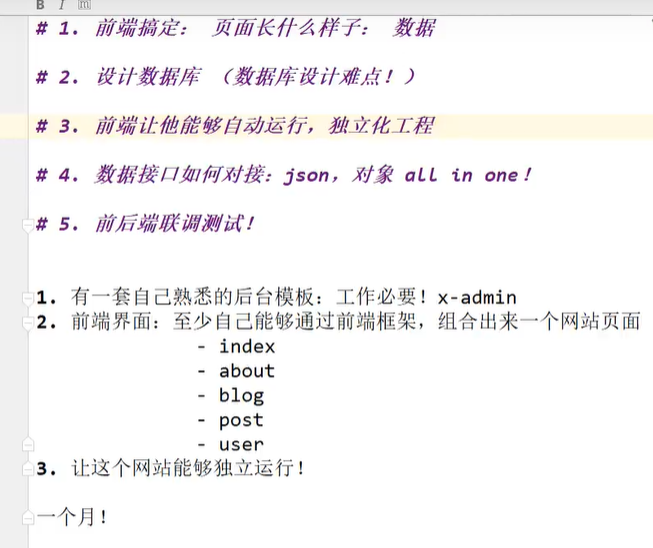
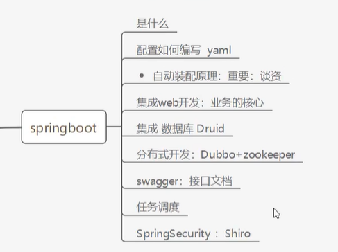
微服务架构
微服务
什么是微服务?
微服务是一种架构风格，它要求我们在开发一个应用的时候，这个应用必须构建成―系列小服务的组合;可以通过http的方式进行互通。要说微服务架构，先得说说过去我们的单体应用架构。
单体应用架构
所谓单体应用架构(all in one)是指，我们将一个应用的中的所有应用服务都封装在一个应用中。
无论是ERP、CRM或是其他什么系统，你都把数据库访问，web访问，等等各个功能放到一个war包内。
这样做的好处是，易于开发和测试;也十分方便部署;当需要扩展时，只需要将war复制多份，然后放到多个服务器上，再做个负载均衡就可以了。
单体应用架构的缺点是，哪怕我要修改一个非常小的地方，我都需要停掉整个服务，重新打包、部署这个应用war包。特别是对于一个大型应用，我们不可能吧所有内容都放在一个应用里面，我们如何维护、如何分工合作都是问题。
微服务架构
all in one的架构方式，我们把所有的功能单元放在一个应用里面。然后我们把整个应用部署到服务器上。如果负载能力不行，我们将整个应用进行水平复制，进行扩展，然后在负载均衡。
所谓微服务架构，就是打破之前all in one的架构方式，把每个功能元素独立出来。把独立出来的功能元素的动态组合，需要的功能元素才去拿来组合，需要多一些时可以整合多个功能元素。所以微服务架构是对功能元素进行复制，而没有对整个应用进行复制。
这样做的好处是:
1.节省了调用资源。
2.每个功能元素的服务都是一个可替换的、可独立升级的软件代码。
如何构建微服务
一个大型系统的微服务架构，就像一个复杂交织的神经网络，每一个神经元就是一个功能元素，它们各自完成自己的功能，然后通过http相互请求调用。比如一个电商系统，查缓存、连数据库、浏览页面、结账、支付等服务都是一个个独立的功能服务，都被微化了，它们作为一个个微服务共同构建了一个庞大的系统。如果修改其中的一个功能，只需要更新升级其中一个功能服务单元即可。
但是这种庞大的系统架构给部署和运维带来很大的难度。于是，spring为我们带来了构建大型分布式微服务的全套、全程产品:
构建一个个功能独立的微服务应用单元，可以使用springboot，可以帮我们快速构建一个应用;
大型分布式网络服务的调用，这部分由spring cloud来完成，实现分布式;
在分布式中间，进行流式数据计算、批处理，我们有s pring cloud data flow。
spring为我们想清楚了整个从开始构建应用到大型分布式应用全流程方案。
第一个SpringBoot程序
创建
直接新建一个项目，使用Spring Initializr
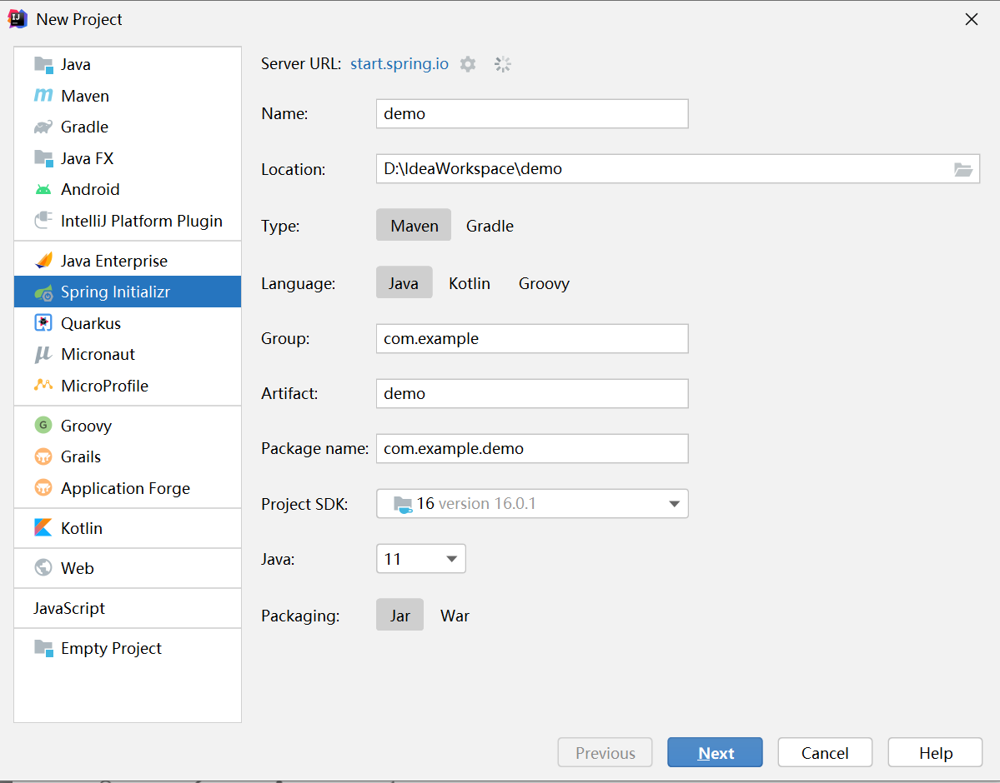
这里可以添加框架，可以自动导入jar包
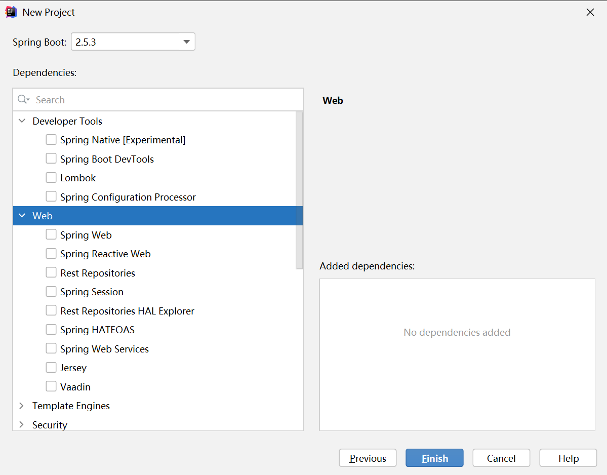
在同级目录建立各种目录，就可以开始开发了
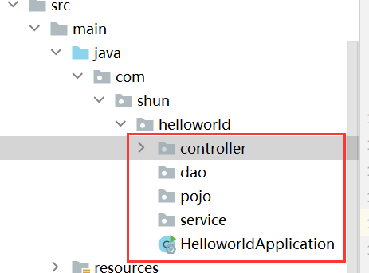
初测试
xxxxxxxxxx151package com.shun.helloworld.controller;2
3import org.springframework.web.bind.annotation.RequestMapping;4import org.springframework.web.bind.annotation.RestController;5
6public class HelloController {8
9
10 ("/hello")11 public String hello(){12 return "hello,world!";13 }14}15
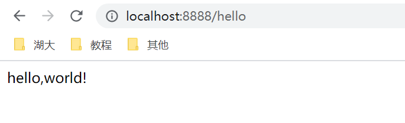
更改端口号
在properties配置文件中设置即可
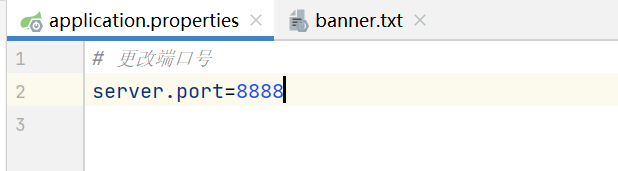
自定义banner
https://www.bootschool.net/ascii-art/comic
可以在这个网站上去定义banner样式
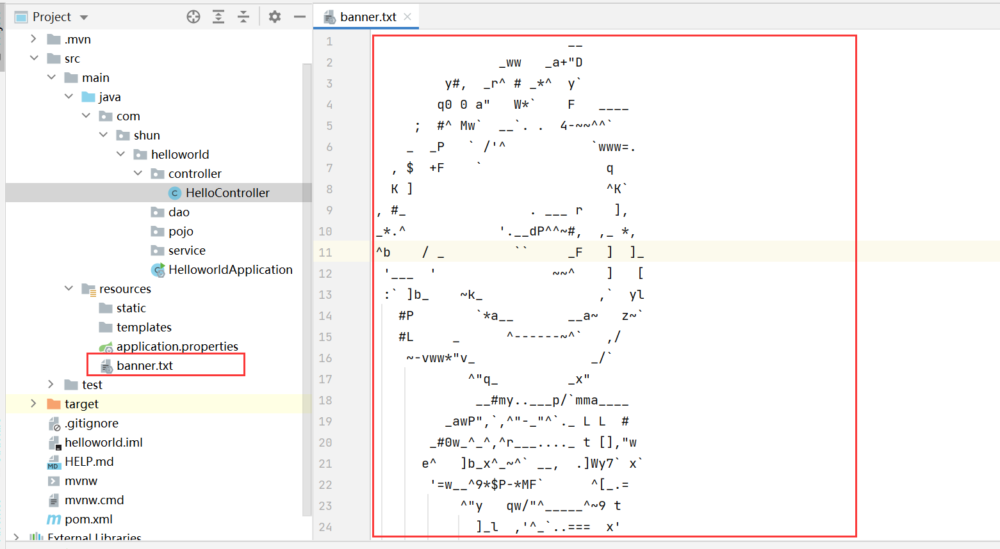
启动后，本来是Spring字样，现在变成自定义了
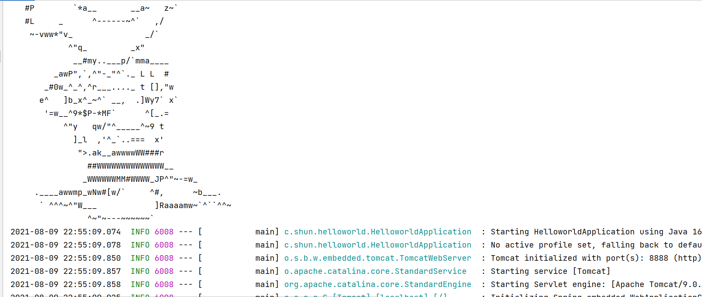
yaml语法
配置文件
SpringBoot使用一个全局的配置文件，配置文件名称是固定的
application.properties
- 语法结构: key=value
application.yml
- 语法结构: key:空格value
配置文件的作用∶修改SpringBoot自动配置的默认值，因为SpringBoot在底层都给我们自动配置好了;
YAML
简介
YAML 语言（发音 /ˈjæməl/ ）的设计目标，就是方便人类读写。它实质上是一种通用的数据串行化格式。
它的基本语法规则如下。
- 大小写敏感
- 使用缩进表示层级关系
- 缩进时不允许使用Tab键，只允许使用空格。
- 缩进的空格数目不重要，只要相同层级的元素左侧对齐即可
# 表示注释，从这个字符一直到行尾，都会被解析器忽略。
YAML 支持的数据结构有三种。
- 对象：键值对的集合，又称为映射（mapping）/ 哈希（hashes） / 字典（dictionary）
- 数组：一组按次序排列的值，又称为序列（sequence） / 列表（list）
- 纯量（scalars）：单个的、不可再分的值
1、对象
对象的一组键值对，使用冒号结构表示。
xxxxxxxxxx11animal: pets
转为 JavaScript 如下。
xxxxxxxxxx11{ animal: 'pets' }
Yaml 也允许另一种写法，将所有键值对写成一个行内对象。
xxxxxxxxxx11hash: { name: Steve, foo: bar }
转为 JavaScript 如下。
xxxxxxxxxx11{ hash: { name: 'Steve', foo: 'bar' } }
2、数组
一组连词线开头的行，构成一个数组。
xxxxxxxxxx31- Cat2- Dog3- Goldfish
转为 JavaScript 如下。
xxxxxxxxxx11[ 'Cat', 'Dog', 'Goldfish' ]
数据结构的子成员是一个数组，则可以在该项下面缩进一个空格。
xxxxxxxxxx41-2- Cat3- Dog4- Goldfish
转为 JavaScript 如下。
xxxxxxxxxx11[ [ 'Cat', 'Dog', 'Goldfish' ] ]
数组也可以采用行内表示法。
xxxxxxxxxx11animal: [Cat, Dog]
转为 JavaScript 如下。
xxxxxxxxxx11{ animal: [ 'Cat', 'Dog' ] }
3、复合结构
对象和数组可以结合使用，形成复合结构。
xxxxxxxxxx91languages:2- Ruby3- Perl4- Python5websites:6YAML: yaml.org7Ruby: ruby-lang.org8Python: python.org9Perl: use.perl.org
转为 JavaScript 如下。
xxxxxxxxxx61{ languages: [ 'Ruby', 'Perl', 'Python' ],2websites:3{ YAML: 'yaml.org',4Ruby: 'ruby-lang.org',5Python: 'python.org',6Perl: 'use.perl.org' } }
4、纯量
纯量是最基本的、不可再分的值。以下数据类型都属于 JavaScript 的纯量。
- 字符串
- 布尔值
- 整数
- 浮点数
- Null
- 时间
- 日期
数值直接以字面量的形式表示。
xxxxxxxxxx11number: 12.30
转为 JavaScript 如下。
xxxxxxxxxx11{ number: 12.30 }
布尔值用true和false表示。
xxxxxxxxxx11isSet: true
转为 JavaScript 如下。
xxxxxxxxxx11{ isSet: true }
null用~表示。
xxxxxxxxxx11parent: ~
转为 JavaScript 如下。
xxxxxxxxxx11{ parent: null }
时间采用 ISO8601 格式。
xxxxxxxxxx11iso8601: 2001-12-14t21:59:43.10-05:00
转为 JavaScript 如下。
xxxxxxxxxx11{ iso8601: new Date('2001-12-14t21:59:43.10-05:00') }
日期采用复合 iso8601 格式的年、月、日表示。
xxxxxxxxxx11date: 1976-07-31
转为 JavaScript 如下。
xxxxxxxxxx11{ date: new Date('1976-07-31') }
YAML 允许使用两个感叹号，强制转换数据类型。
xxxxxxxxxx21e: !!str 1232f: !!str true
转为 JavaScript 如下。
xxxxxxxxxx11{ e: '123', f: 'true' }
5、字符串
字符串是最常见，也是最复杂的一种数据类型。
字符串默认不使用引号表示。
xxxxxxxxxx11str: 这是一行字符串
转为 JavaScript 如下。
xxxxxxxxxx11{ str: '这是一行字符串' }
如果字符串之中包含空格或特殊字符，需要放在引号之中。
xxxxxxxxxx11str: '内容： 字符串'
转为 JavaScript 如下。
xxxxxxxxxx11{ str: '内容: 字符串' }
单引号和双引号都可以使用，双引号不会对特殊字符转义。
xxxxxxxxxx21s1: '内容\n字符串'2s2: "内容\n字符串"
转为 JavaScript 如下。
xxxxxxxxxx11{ s1: '内容\\n字符串', s2: '内容\n字符串' }
单引号之中如果还有单引号，必须连续使用两个单引号转义。
xxxxxxxxxx11str: 'labor''s day'
转为 JavaScript 如下。
xxxxxxxxxx11{ str: 'labor\'s day' }
字符串可以写成多行，从第二行开始，必须有一个单空格缩进。换行符会被转为空格。
xxxxxxxxxx31str: 这是一段2多行3字符串
转为 JavaScript 如下。
xxxxxxxxxx11{ str: '这是一段 多行 字符串' }
多行字符串可以使用|保留换行符，也可以使用>折叠换行。
xxxxxxxxxx61this: |2Foo3Bar4that: >5Foo6Bar
转为 JavaScript 代码如下。
xxxxxxxxxx11{ this: 'Foo\nBar\n', that: 'Foo Bar\n' }
+表示保留文字块末尾的换行，-表示删除字符串末尾的换行。
xxxxxxxxxx91s1: |2Foo3s2: |+5Foo6s3: |-9Foo
转为 JavaScript 代码如下。
xxxxxxxxxx11{ s1: 'Foo\n', s2: 'Foo\n\n\n', s3: 'Foo' }
字符串之中可以插入 HTML 标记。
xxxxxxxxxx51message: |2<p style="color: red">4段落5</p>
转为 JavaScript 如下。
xxxxxxxxxx11{ message: '\n<p style="color: red">\n 段落\n</p>\n' }
6、引用
锚点&和别名*，可以用来引用。
xxxxxxxxxx111defaults: &defaults2adapter: postgres3host: localhost4development:6database: myapp_development7<<: *defaults8test:10database: myapp_test11<<: *defaults
等同于下面的代码。
xxxxxxxxxx131defaults:2adapter: postgres3host: localhost4development:6database: myapp_development7adapter: postgres8host: localhost9test:11database: myapp_test12adapter: postgres13host: localhost
&用来建立锚点（defaults），<<表示合并到当前数据，*用来引用锚点。
下面是另一个例子。
xxxxxxxxxx51- &showell Steve2- Clark3- Brian4- Oren5- *showell
转为 JavaScript 代码如下。
xxxxxxxxxx11[ 'Steve', 'Clark', 'Brian', 'Oren', 'Steve' ]
7、函数和正则表达式的转换
这是 JS-YAML 库特有的功能，可以把函数和正则表达式转为字符串。
xxxxxxxxxx31# example.yml2fn: function () { return 1 }3reg: /test/
解析上面的 yml 文件的代码如下。
xxxxxxxxxx111var yaml = require('js-yaml');2var fs = require('fs');3try {5var doc = yaml.load(6fs.readFileSync('./example.yml', 'utf8')7);8console.log(doc);9} catch (e) {10console.log(e);11}
从 JavaScript 对象还原到 yaml 文件的代码如下。
xxxxxxxxxx171var yaml = require('js-yaml');2var fs = require('fs');3var obj = {5fn: function () { return 1 },6reg: /test/7};8try {10fs.writeFileSync(11'./example.yml',12yaml.dump(obj),13'utf8'14);15} catch (e) {16console.log(e);17}
属性赋值
实体类以及配置文件
xxxxxxxxxx301public class Dog {3 ("旺财")4 private String name;5 ("3")6 private Integer age;/*7configurationProperties作用:8将配置文件中配置的每一个属性的值，映射到这个组件中;9告诉SpringBoot将本类中的所有属性和配置文件中相关的配置进行绑定10参数 prefix = "person":将配置文件中的person下面的所有属性—─对应11只有这个组件是容器中的组件，才能使用容器提供的configurationProperties功能12
13 */14(prefix = "person")16public class Person {17 private String name;18 private Integer age;19 private Boolean happy;20 private Date brithday;21 private Map<String, Object> maps;22 private List<Object> lists;23 private Dog dog;24 25public class Dog {27 ("旺财")28 private String name;29 ("3")30 private Integer age;xxxxxxxxxx131person2 nameliushun3 age34 happytrue5 brithday2021/1/16 mapsk1v1 k2v27 lists8code9music10play11 dog12 name旺财13 age4测试
xxxxxxxxxx111private Dog dog;3
4private Person person;6
7void contextLoads() {9 System.out.println(dog);10 System.out.println(person);11}xxxxxxxxxx21Dog{name='旺财', age=3}2Person{name='liushun', age=3, happy=true, brithday=Fri Jan 01 00:00:00 CST 2021, maps={k1=v1, k2=v2}, lists=[code, music, play], dog=Dog{name='旺财', age=4}}对比图
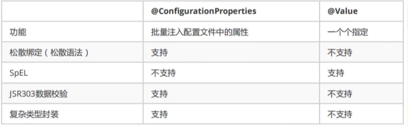
- cp只需要写一次即可， value则需要每个字段都添加
- 松散绑定:这个什么意思呢?比如我的yml中写的last-name，这个和lastName是一样的，–后面跟着的字母默认是大写的。这就是松散绑定
- JSR303数据校验，这个就是我们可以在字段是增加一层过滤器验证，可以保证数据的合法性复杂类型封装，yml中可以封装对象，使用@value就不支持
结论
- 配置yml和配置properties都可以获取到值，强烈推荐yml
- 如果我们在某个业务中，只需要获取配置文件中的某个值，可以使用一下@value
- 如果说，我们专门编写了一个JavaBean来和配置文件进行映射，就直接使用@configurationProperties，不要犹豫!
JSR303校验
JSR-303 是 JAVA EE 6 中的一项子规范，叫做 Bean Validation，官方参考实现是Hibernate Validator。
此实现与 Hibernate ORM 没有任何关系。 JSR 303 用于对 Java Bean 中的字段的值进行验证。
Spring MVC 3.x 之中也大力支持 JSR-303，可以在控制器中对表单提交的数据方便地验证。
基本校验规则
空检查 @Null 验证对象是否为null @NotNull 验证对象是否不为null, 无法查检长度为0的字符串 @NotBlank 检查约束字符串是不是Null还有被Trim的长度是否大于0,只对字符串,且会去掉前后空格. @NotEmpty 检查约束元素是否为NULL或者是EMPTY.
Booelan检查 @AssertTrue 验证 Boolean 对象是否为 true @AssertFalse 验证 Boolean 对象是否为 false
长度检查 @Size(min=, max=) 验证对象（Array,Collection,Map,String）长度是否在给定的范围之内 @Length(min=, max=) Validates that the annotated string is between min and max included.
日期检查 @Past 验证 Date 和 Calendar 对象是否在当前时间之前，验证成立的话被注释的元素一定是一个过去的日期 @Future 验证 Date 和 Calendar 对象是否在当前时间之后 ，验证成立的话被注释的元素一定是一个将来的日期 @Pattern 验证 String 对象是否符合正则表达式的规则，被注释的元素符合制定的正则表达式，regexp:正则表达式 flags: 指定 Pattern.Flag 的数组，表示正则表达式的相关选项。
数值检查 建议使用在Stirng,Integer类型，不建议使用在int类型上，因为表单值为“”时无法转换为int，但可以转换为Stirng为”“,Integer为null @Min 验证 Number 和 String 对象是否大等于指定的值 @Max 验证 Number 和 String 对象是否小等于指定的值 @DecimalMax 被标注的值必须不大于约束中指定的最大值. 这个约束的参数是一个通过BigDecimal定义的最大值的字符串表示.小数存在精度 @DecimalMin 被标注的值必须不小于约束中指定的最小值. 这个约束的参数是一个通过BigDecimal定义的最小值的字符串表示.小数存在精度 @Digits 验证 Number 和 String 的构成是否合法 @Digits(integer=,fraction=) 验证字符串是否是符合指定格式的数字，interger指定整数精度，fraction指定小数精度。 @Range(min=, max=) 被指定的元素必须在合适的范围内 @Range(min=10000,max=50000,message=”range.bean.wage”) @Valid 递归的对关联对象进行校验, 如果关联对象是个集合或者数组,那么对其中的元素进行递归校验,如果是一个map,则对其中的值部分进行校验.(是否进行递归验证) @CreditCardNumber信用卡验证 @Email 验证是否是邮件地址，如果为null,不进行验证，算通过验证。 @ScriptAssert(lang= ,script=, alias=) @URL(protocol=,host=, port=,regexp=, flags=)
案例
xxxxxxxxxx281public class Order {2 // 必须不为 null, 大小是 103 4 (min = 10, max = 10)5 private String orderId;6 // 必须不为空7 8 private String customer;9 // 必须是一个电子信箱地址10 11 private String email;12 // 必须不为空13 14 private String address;15 // 必须不为 null, 必须是下面四个字符串'created', 'paid', 'shipped', 'closed'其中之一16 // @Status 是一个定制化的 contraint17 18 19 private String status;20 // 必须不为 null21 22 private Date createDate;23 // 嵌套验证24 25 private Product product;26 27 // getter 和setter方法28}多环境配置
多环境选择
直接在一个yml文件中写多套配置，用三条横线分割，然后规定使用哪一套配置即可
也可以使用多文件，application-dev.yml格式命名
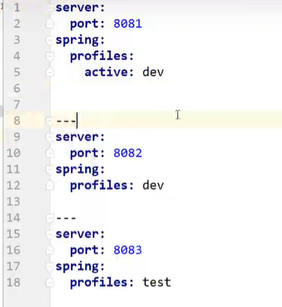
自动配置初原理
1)SpringBoot启动会加载大量的自动配置类
2)我们看我们需要的功能有没有在SpringBoot默认写好的自动配置类当中;
3)我们再来看这个自动配置类中到底配置了哪些组件;(只要我们要用的组件存在在其中，我们就不需要再手动配置了)
4)给容器中自动配置类添加组件的时候，会从properties类中获取某些属性。我们只需要在配置文件中指定这些属性的值即可;
xxxxAutoConfigurartion:自动配置类;给容器中添加组件
xxxxProperties:封装配置文件中相关属性;
查看生效配置
可以通过debug=true来查看，哪些自动配置类生效，哪些没有生效!
xxxxxxxxxx11debugtrue
SpringBoot Web开发
静态资源导入
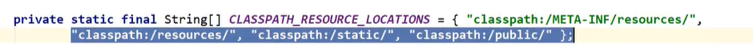
如果没有自定义的话，静态资源一般可以放在三个目录下，分别在resources目录下的resources,static,public，且优先级和顺序一致，即public优先级最低
而templates下面的页面只能通过controller才跳转，其余的可以通过url直接访问
首页
所以在上面三个路径下新建一个index.html即可
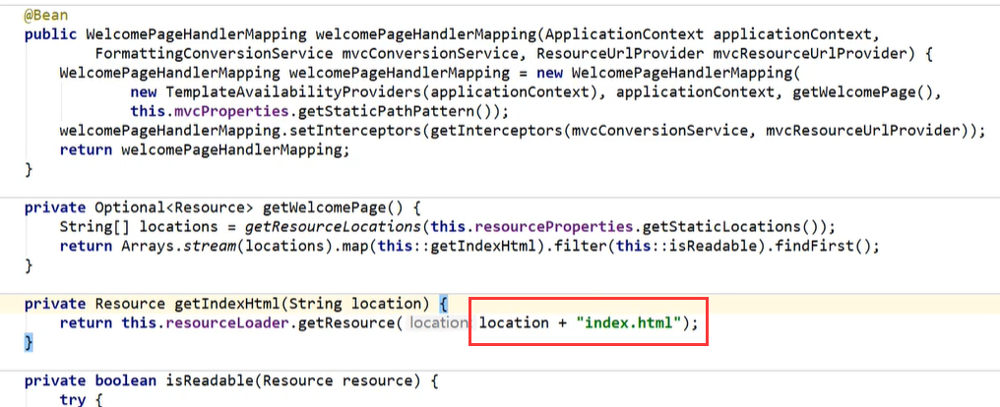
模板引擎thymeleaf
简介
模板引擎的作用就是我们来写一个页面模板，比如有些值呢，是动态的，我们写一些表达式。而这些值，从哪来呢，我们来组装一些数据，我们把这些数据找到。然后把这个模板和这个数据交给我们模板引擎，模板引擎按照我们这个数据帮你把这表达式解析、填充到我们指定的位置，然后把这个数据最终生成一个我们想要的内容给我们写出去，这就是我们这个模板引擎，不管是jsp还是其他模板引擎，都是这个思想。
不同模板引擎之间，他们可能这个语法有点不一样。
SpringBoot给我们推荐的Thymeleaf模板引擎是一个高级语言的模板引擎，他的这个语法更简单。而且呢，功能更强大。
源码
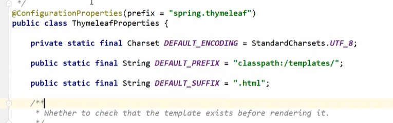
依赖
xxxxxxxxxx91<!-- thymeleaf 基于3.x开发-->2<dependency>3 <groupId>org.thymeleaf</groupId>4 <artifactId>thymeleaf-spring5</artifactId>5</dependency>6<dependency>7 <groupId>org.thymeleaf.extras</groupId>8 <artifactId>thymeleaf-extras-java8time</artifactId>9</dependency>简单使用
xxxxxxxxxx201<html lang="en" xmlns:th="http://www.thymeleaf.org">3<head>4 <meta charset="UTF-8">5 <title>Title</title>6</head>7<body>8<!--文本，不转义-->9<div th:text="${msg}"></div>10<!--文本转义-->11<div th:utext="${msg}"></div>12
13<!--换行线-->14<hr>15
16<!--遍历-->17<h3 th:each="user:${users}" th:text="${user}"></h3>18<!--<h3 th:each="user:${users}">[[ ${user} ]]</h3>-->19</body>20</html>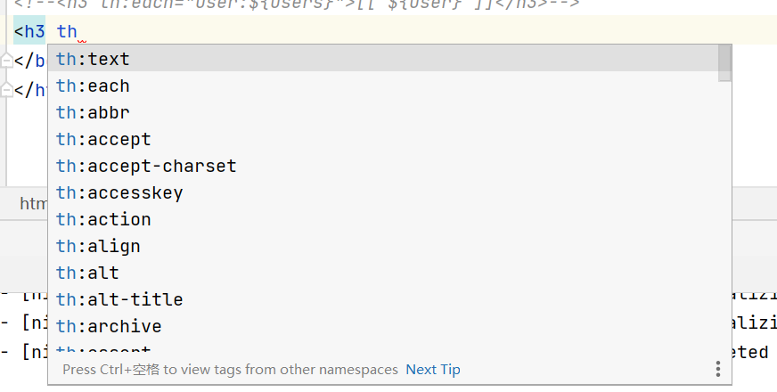
有很多用法，可以看文档https://www.thymeleaf.org/doc/tutorials/3.0/usingthymeleaf.html#standard-expression-syntax
简单使用规则
Simple expressions:
- Variable Expressions:
${...} - Selection Variable Expressions:
*{...} - Message Expressions:
#{...} - Link URL Expressions:
@{...} - Fragment Expressions:
~{...}
- Variable Expressions:
Literals
- Text literals:
'one text','Another one!',… - Number literals:
0,34,3.0,12.3,… - Boolean literals:
true,false - Null literal:
null - Literal tokens:
one,sometext,main,…
- Text literals:
Text operations:
- String concatenation:
+ - Literal substitutions:
|The name is ${name}|
- String concatenation:
Arithmetic operations:
- Binary operators:
+,-,*,/,% - Minus sign (unary operator):
-
- Binary operators:
Boolean operations:
- Binary operators:
and,or - Boolean negation (unary operator):
!,not
- Binary operators:
Comparisons and equality:
- Comparators:
>,<,>=,<=(gt,lt,ge,le) - Equality operators:
==,!=(eq,ne)
- Comparators:
Conditional operators:
- If-then:
(if) ? (then) - If-then-else:
(if) ? (then) : (else) - Default:
(value) ?: (defaultvalue)
- If-then:
Special tokens:
- No-Operation:
_
- No-Operation:
SpringMVC扩展--配置
所有的配置扩展，只需要继承一个接口，然后添加一个注解，就可以生效
xxxxxxxxxx171package com.shun.helloworld.config;2
3import org.springframework.context.annotation.Configuration;4import org.springframework.web.servlet.config.annotation.ViewControllerRegistry;5import org.springframework.web.servlet.config.annotation.WebMvcConfigurer;6
7//如果要扩展springmvc配置，就可以写一个配置类，添加configuration注解8public class MyMvcConfig implements WebMvcConfigurer {10
11 //视图跳转12 13 public void addViewControllers(ViewControllerRegistry registry) {14 registry.addViewController("/shun").setViewName("test");15 }16}17
结果
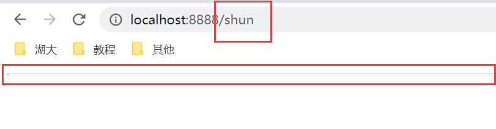
员工管理系统
首先还没有数据库，所以需要模拟数据库操作
1、导入静态资源
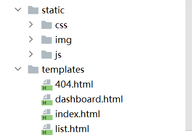
这里需要注意的是t'hth
2、创建各种类
pojo
可以导入lombok依赖，实现自动装配方法
xxxxxxxxxx131//部门表2public class Department {3 private Integer id;4 private String departmentName;5 6//员工表7public class Employee {8 private Integer id;9 private String lastName;10 private String email;11 private Integer gender;//0 女 1 男12 private Department department;13 private Date birth;dao
记得加@Repository这个注解
xxxxxxxxxx371package com.shun.helloworld.dao;2
3import com.shun.helloworld.pojo.Department;4
5import java.util.Collection;6import java.util.HashMap;7import java.util.Map;8
9//部门dao10public class DepartmentDao {12
13 //模拟数据库14 private static Map<Integer, Department> departmentMap = null;15
16 static {17 departmentMap = new HashMap<Integer, Department>();18
19 departmentMap.put(101, new Department(101, "教学部"));20 departmentMap.put(102, new Department(102, "实践部"));21 departmentMap.put(103, new Department(103, "后勤部"));22 departmentMap.put(104, new Department(104, "保卫部"));23 departmentMap.put(105, new Department(105, "监督部"));24 departmentMap.put(106, new Department(106, "集资部"));25 }26
27 //操作28 //获得所有部门信息29 public Collection<Department> getDepartments(){30 return departmentMap.values();31 }32
33 //通过Id得到部门34 public Department getDepartmentById(Integer id){35 return departmentMap.get(id);36 }37}xxxxxxxxxx571package com.shun.helloworld.dao;2
3import com.shun.helloworld.pojo.Department;4import com.shun.helloworld.pojo.Employee;5import org.springframework.beans.factory.annotation.Autowired;6
7import java.util.Collection;8import java.util.Date;9import java.util.HashMap;10import java.util.Map;11
12public class EmployeeDao {14
15 //模拟数据库16 private static Map<Integer, Employee> employeeMap = null;17 //员工所属部门18 19 private DepartmentDao departmentDao;20 static {21 employeeMap = new HashMap<Integer, Employee>();22
23 employeeMap.put(1001, new Employee(1001, "aa", "1143760069@qq.com", 1, new Department(101, "教学部"), new Date()));24 employeeMap.put(1001, new Employee(1001, "bb", "2243760069@qq.com", 0, new Department(102, "实践部"), new Date()));25 employeeMap.put(1001, new Employee(1001, "cc", "3343760069@qq.com", 1, new Department(103, "后勤部"), new Date()));26 employeeMap.put(1001, new Employee(1001, "dd", "4443760069@qq.com", 0, new Department(104, "保卫部"), new Date()));27 employeeMap.put(1001, new Employee(1001, "ee", "5543760069@qq.com", 1, new Department(105, "监督部"), new Date()));28 employeeMap.put(1001, new Employee(1001, "ff", "6643760069@qq.com", 0, new Department(106, "集资部"), new Date()));29 }30
31 //主键自增32 private static Integer initId = 1006;33 //操作34
35 public void add(Employee employee){36 if(employee.getId() == null){37 employee.setId(initId++);38 }39
40 employee.setDepartment(departmentDao.getDepartmentById(employee.getDepartment().getId()));41
42 employeeMap.put(employee.getId(), employee);43 }44
45 //查询员工46 public Collection<Employee> getAll(){47 return employeeMap.values();48 }49
50 public Employee getEmployeeById(Integer id){51 return employeeMap.get(id);52 }53
54 public void deleteById(Integer id){55 employeeMap.remove(id);56 }57}
3、首页实现
配置扩展实现首页的显示
xxxxxxxxxx171package com.shun.helloworld.config;2
3import org.springframework.context.annotation.Configuration;4import org.springframework.web.servlet.config.annotation.ViewControllerRegistry;5import org.springframework.web.servlet.config.annotation.WebMvcConfigurer;6
7//如果要扩展springmvc配置，就可以写一个配置类，添加configuration注解8public class MyMvcConfig implements WebMvcConfigurer {10
11 12 public void addViewControllers(ViewControllerRegistry registry) {13 registry.addViewController("/").setViewName("index");14 registry.addViewController("/index.html").setViewName("index");15 }16}17
4、国际化
1、i18n配置编写
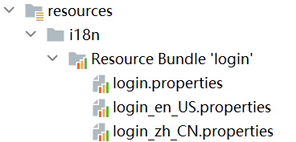
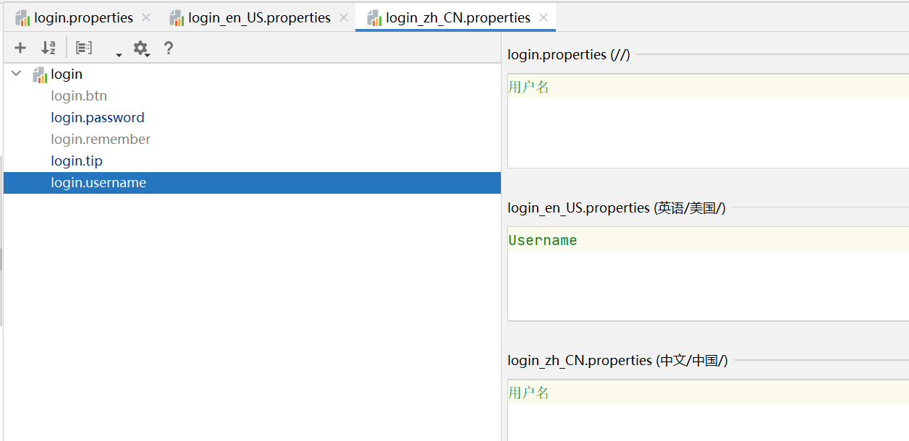
2、前端页面链接选择
xxxxxxxxxx21<a class="btn btn-sm" th:href="@{/index.html(language='zh_CN')}">中文</a>2<a class="btn btn-sm" th:href="@{/index.html(language='en_US')}">English</a>3、编写自己的国际化解析器LocaleResolver
xxxxxxxxxx311package com.shun.helloworld.config;2
3import org.springframework.util.StreamUtils;4import org.springframework.util.StringUtils;5import org.springframework.web.servlet.LocaleResolver;6
7import javax.servlet.http.HttpServletRequest;8import javax.servlet.http.HttpServletResponse;9import java.util.Locale;10
11public class MyLocaleResolver implements LocaleResolver {12
13 //解析请求14 15 public Locale resolveLocale(HttpServletRequest httpServletRequest) {16 //获取参数17 String language = httpServletRequest.getParameter("language");18
19 Locale aDefault = Locale.getDefault();20 if (!StringUtils.isEmpty(language)) {21 String[] s = language.split("_");22 aDefault = new Locale(s[0], s[1]);23 }24 return aDefault;25 }26
27 28 public void setLocale(HttpServletRequest httpServletRequest, HttpServletResponse httpServletResponse, Locale locale) {29
30 }31}4、注册到容器
在扩展配置中注册
xxxxxxxxxx51//注入 自定义国际化组件到 spring 容器2public LocaleResolver localeResolver(){4 return new MyLocaleResolver();5}5、界面展示
5、登陆界面及拦截器
LoginController
xxxxxxxxxx261package com.shun.helloworld.controller;2
3import org.springframework.stereotype.Controller;4import org.springframework.ui.Model;5import org.springframework.util.StringUtils;6import org.springframework.web.bind.annotation.RequestMapping;7import org.springframework.web.bind.annotation.RequestParam;8import javax.servlet.http.HttpSession;9
10public class LoginController {12
13 ("/user/login")14 public String login(("username") String username,15 ("password") String password,16 Model model, HttpSession session){17 //业务18 if (!StringUtils.isEmpty(username) && "123456".equals(password)){19 session.setAttribute("loginUser", username);20 return "redirect:/main.html";21 }else {22 model.addAttribute("msg", "用户名或密码错误");23 return "index";24 }25 }26}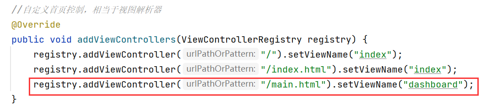
一般我们会让他重定向到main.html请求，然后视图解析器直接将main.html映射到我们的主页
拦截器
写在config中
首先需要自己写拦截器类，根据session中有没有数据判断是否登陆成功
xxxxxxxxxx211package com.shun.helloworld.config;2
3import org.springframework.web.servlet.HandlerInterceptor;4
5import javax.servlet.http.HttpServletRequest;6import javax.servlet.http.HttpServletResponse;7
8public class LoginHandlerInterceptor implements HandlerInterceptor {9
10 11 public boolean preHandle(HttpServletRequest request, HttpServletResponse response, Object handler) throws Exception {12 Object loginUser = request.getSession().getAttribute("loginUser");13 if (loginUser == null){14 request.setAttribute("msg", "没有权限，请先登录");15 request.getRequestDispatcher("/index.html").forward(request,response);16 return false;17 }18 return true;19 }20}21
注册拦截器到容器中
addPathPatterns是添加拦截器的url，excludePathPatterns是不添加的路径，一般登陆页面请求，以及一些静态资源不添加
xxxxxxxxxx71//登陆拦截器2public void addInterceptors(InterceptorRegistry registry) {4 registry.addInterceptor(new LoginHandlerInterceptor())5 .addPathPatterns("/**")6 .excludePathPatterns("/index.html", "/", "/user/login", "/static/**");7}
6、展示员工列表
1、前端公共页面抽离
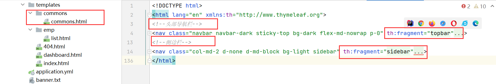
2、前端公共页面引用
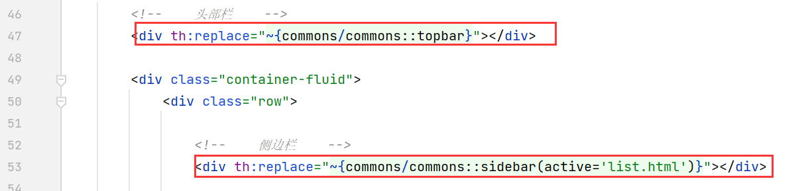
3、页面选择栏高亮
一个传递参数 list.html
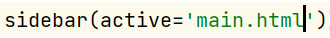
一个接收参数并判断 commons.html
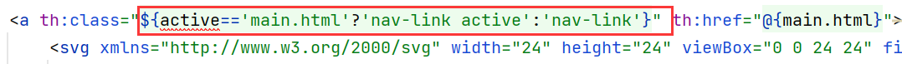
4、页面展示Controller
xxxxxxxxxx251package com.shun.helloworld.controller;2
3import com.shun.helloworld.dao.EmployeeDao;4import com.shun.helloworld.pojo.Employee;5import org.springframework.beans.factory.annotation.Autowired;6import org.springframework.stereotype.Controller;7import org.springframework.ui.Model;8import org.springframework.web.bind.annotation.RequestMapping;9
10import java.util.Collection;11
12public class EmployeeController {14
15 16 EmployeeDao employeeDao;17
18 ("/emps")19 public String list(Model model){20 Collection<Employee> employees = employeeDao.getAll();21 model.addAttribute("emps", employees);22 System.out.println("00000");23 return "emp/list";24 }25}5、前端员工数据展示
xxxxxxxxxx321<main role="main" class="col-md-9 ml-sm-auto col-lg-10 pt-3 px-4">2 <h2>员工列表</h2>3 <div class="table-responsive">4 <table class="table table-striped table-sm">5 <thead>6 <tr>7 <th>id</th>8 <th>lastName</th>9 <th>email</th>10 <th>gender</th>11 <th>department</th>12 <th>birth</th>13 <th>操作</th>14 </tr>15 </thead>16 <tbody>17 <tr th:each="emp:${emps}">18 <td th:text="${emp.getId()}"></td>19 <td th:text="${emp.getLastName()}"></td>20 <td th:text="${emp.getEmail()}"></td>21 <td th:text="${emp.getGender()==0?'女':'男'}"></td>22 <td th:text="${emp.getDepartment().getDepartmentName()}"></td>23 <td th:text="${#dates.format(emp.getBirth(), 'yyyy-MM-dd')}"></td>24 <td>25 <button class="btn btn-sm btn-primary">编辑</button>26 <button class="btn btn-sm btn-danger">删除</button>27 </td>28 </tr>29 </tbody>30 </table>31 </div>32</main>6、结果展示
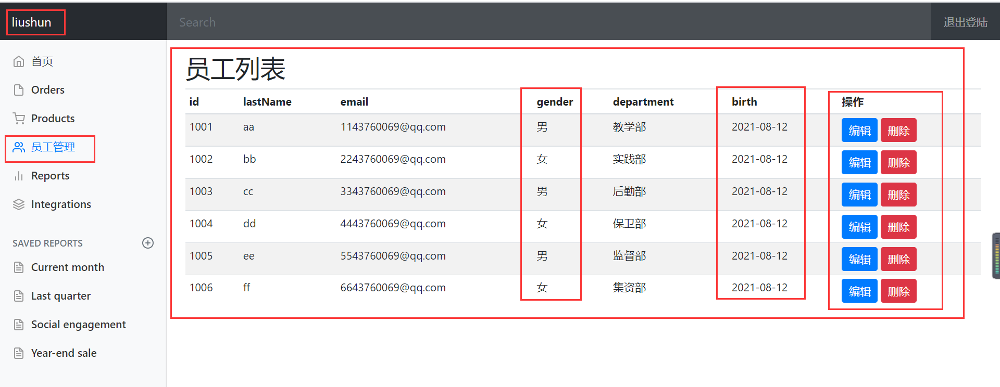
7、添加员工
前端
前端需要一个添加页面add.html
xxxxxxxxxx381list.html页面中的button组件2<h2><a class="btn btn-sm btn-success" th:href="@{/emp}">添加员工</a> </h2>3
4add.html页面的主要逻辑，复制list.html的样式5<form th:action="@{/emp}" th:method="post">6 <div class="form-group">7 <label>LastName</label>8 <input type="text" class="form-control" name="lastName" placeholder="sssss">9 </div>10 <div class="form-group">11 <label>Email</label>12 <input type="text" class="form-control" name="email" placeholder="sssss">13 </div>14 <div class="form-group">15 <label>Gender</label>16 <br>17 <div class="form-check form-check-inline">18 <input class="form-check-input" type="radio" name="gender" value="1">19 <label class="form-check-label">男</label>20 </div>21 <div class="form-check form-check-inline">22 <input class="form-check-input" type="radio" name="gender" value="0">23 <label class="form-check-label">女</label>24 </div>25 </div>26 <div class="form-group">27 <label>Department</label>28 <!-- 这里提交的应该是一个属性，否则需要封装 -->29 <select class="form-control" name="department.id">30 <option th:each="dept:${departments}" th:text="${dept.getDepartmentName()}" th:value="${dept.getId()}"></option>31 </select>32 </div>33 <div class="form-group">34 <label>Birth</label>35 <input type="text" class="form-control" name="birth" placeholder="yyyy/mm/dd">36 </div>37 <button type="submit" class="btn btn-sm btn-primary">添加</button>38</form>Controller
xxxxxxxxxx141("/emp")2public String toAddPage(Model model){3 //查出所有部门的信息4 Collection<Department> departments = departmentDao.getDepartments();5 model.addAttribute("departments", departments);6 return "emp/add";7}8
9("/emp")10public String addEmp(Employee employee){11 //添加的操作12 employeeDao.add(employee);13 return "redirect:/emps";14}restful风格请求，请求路径相同，但是提交方法不同
结果展示
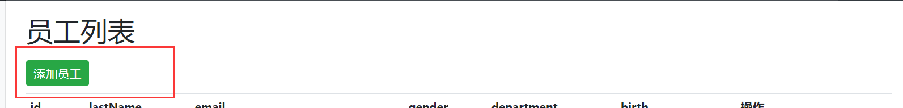
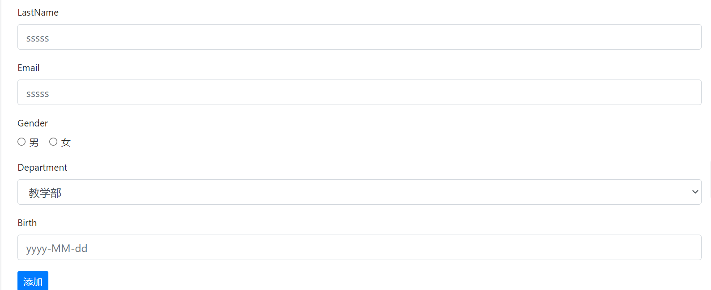
8、修改员工
前端
前端需要一个修改页面，直接复制list.html的样式即可
只不过表单里面需要显示员工原来的信息
xxxxxxxxxx351<form th:action="@{/updateEmp}" th:method="post">2 <input type="hidden" name="id" th:value="${employee.getId()}">3 <div class="form-group">4 <label>LastName</label>5 <input th:value="${employee.getLastName()}" type="text" class="form-control" name="lastName" placeholder="sssss">6 </div>7 <div class="form-group">8 <label>Email</label>9 <input th:value="${employee.getEmail()}" type="text" class="form-control" name="email" placeholder="sssss">10 </div>11 <div class="form-group">12 <label>Gender</label>13 <br>14 <div class="form-check form-check-inline">15 <input th:checked="${employee.getGender()==1}" class="form-check-input" type="radio" name="gender" value="1">16 <label class="form-check-label">男</label>17 </div>18 <div class="form-check form-check-inline">19 <input th:checked="${employee.getGender()==0}" class="form-check-input" type="radio" name="gender" value="0">20 <label class="form-check-label">女</label>21 </div>22 </div>23 <div class="form-group">24 <label>Department</label>25 <!-- 这里提交的应该是一个属性，否则需要封装 -->26 <select class="form-control" name="department.id">27 <option th:selected="${dept.getId()==employee.getDepartment().getId()}" th:each="dept:${departments}" th:text="${dept.getDepartmentName()}" th:value="${dept.getId()}"></option>28 </select>29 </div>30 <div class="form-group">31 <label>Birth</label>32 <input th:value="${#dates.format(employee.getBirth(), 'yyyy-MM-dd')}" type="text" class="form-control" name="birth" placeholder="yyyy-MM-dd">33 </div>34 <button type="submit" class="btn btn-sm btn-primary">提交修改</button>35</form>list.html里面的按钮需要修改一下

Controller
需要写一个跳转页面和一个提交修改的页面
同样使用restful风格
xxxxxxxxxx161("/emp/{id}")2public String toUpdate(("id") Integer id, Model model){3 //用户信息4 Employee employeeById = employeeDao.getEmployeeById(id);5 model.addAttribute("employee", employeeById);6 //查出所有部门的信息7 Collection<Department> departments = departmentDao.getDepartments();8 model.addAttribute("departments", departments);9 return "emp/update";10}11
12("/updateEmp")13public String updateEmp(Employee employee){14 employeeDao.add(employee);15 return "redirect:/emps";16}展示
9、删除员工及404的处理
前端按钮提交

后端处理loginController
xxxxxxxxxx51("/user/logout")2public String logout(HttpSession session){3 session.invalidate();4 return "redirect:/index.html";5}404
在springBoot中，只需要在templates目录下，新修建一个error文件加，见处理错误的代码放在里面，一旦出现错误，就会自动寻找并匹配，比如404.html，500.html等等
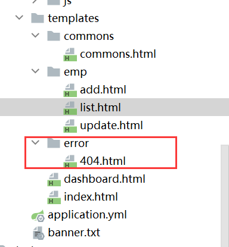
整合JDBC
创建项目时，添加jdbc和mysql driver依赖
配置文件
xxxxxxxxxx61spring2 datasource3 usernameroot4 password.20010404liushun5 driver-class-namecom.mysql.cj.jdbc.Driver6 urljdbcmysql//localhost3306/mybatis?useUnicode=true&characterEncoding=utf-8Controller使用
使用template可以直接执行
xxxxxxxxxx241package com.example.datedemo.controller;2
3import org.springframework.beans.factory.annotation.Autowired;4import org.springframework.jdbc.core.JdbcTemplate;5import org.springframework.web.bind.annotation.GetMapping;6import org.springframework.web.bind.annotation.RestController;7
8import java.util.List;9import java.util.Map;10
11public class JDBCController {13
14 15 JdbcTemplate jdbcTemplate;16
17 ("/userlist")18 public List<Map<String, Object>> userlist(){19 String sql = "select * from user";20 List<Map<String, Object>> maps = jdbcTemplate.queryForList(sql);21 return maps;22 }23}24
整合Druid数据源
DRUID简介
Druid是阿里巴巴开源平台上一个数据库连接池实现，结合了C3PO、DBCP、PROXOOL等DB池的优点，同时加入了日志监控。
Druid 可以很好的监控DB池连接和SQL的执行情况，天生就是针对监控而生的DB连接池。
Spring Boot 2.0 以上默认使用Hikari 数据源，可以说Hikari与 Driud都是当前Java Web上最优秀的数据源，我们来重点介绍Spring Boot如何集成Druid 数据源，如何实现数据库监控。
com.alibaba.druid.pool.DruidDataSource基本配置参数如下:
| 配置 | 缺省值 | 说明 |
|---|---|---|
| name | 配置这个属性的意义在于，如果存在多个数据源，监控的时候可以通过名字来区分开来。如果没有配置，将会生成一个名字，格式是："DataSource-" + System.identityHashCode(this). 另外配置此属性至少在1.0.5版本中是不起作用的，强行设置name会出错。详情-点此处。 | |
| url | 连接数据库的url，不同数据库不一样。例如： mysql : jdbc:mysql://10.20.153.104:3306/druid2 oracle : jdbc:oracle:thin:@10.20.149.85:1521:ocnauto | |
| username | 连接数据库的用户名 | |
| password | 连接数据库的密码。如果你不希望密码直接写在配置文件中，可以使用ConfigFilter。详细看这里 | |
| driverClassName | 根据url自动识别 | 这一项可配可不配，如果不配置druid会根据url自动识别dbType，然后选择相应的driverClassName |
| initialSize | 0 | 初始化时建立物理连接的个数。初始化发生在显示调用init方法，或者第一次getConnection时 |
| maxActive | 8 | 最大连接池数量 |
| maxIdle | 8 | 已经不再使用，配置了也没效果 |
| minIdle | 最小连接池数量 | |
| maxWait | 获取连接时最大等待时间，单位毫秒。配置了maxWait之后，缺省启用公平锁，并发效率会有所下降，如果需要可以通过配置useUnfairLock属性为true使用非公平锁。 | |
| poolPreparedStatements | false | 是否缓存preparedStatement，也就是PSCache。PSCache对支持游标的数据库性能提升巨大，比如说oracle。在mysql下建议关闭。 |
| maxPoolPreparedStatement-PerConnectionSize | -1 | 要启用PSCache，必须配置大于0，当大于0时，poolPreparedStatements自动触发修改为true。在Druid中，不会存在Oracle下PSCache占用内存过多的问题，可以把这个数值配置大一些，比如说100 |
| validationQuery | 用来检测连接是否有效的sql，要求是一个查询语句，常用select 'x'。如果validationQuery为null，testOnBorrow、testOnReturn、testWhileIdle都不会起作用。 | |
| validationQueryTimeout | 单位：秒，检测连接是否有效的超时时间。底层调用jdbc Statement对象的void setQueryTimeout(int seconds)方法 | |
| testOnBorrow | true | 申请连接时执行validationQuery检测连接是否有效，做了这个配置会降低性能。 |
| testOnReturn | false | 归还连接时执行validationQuery检测连接是否有效，做了这个配置会降低性能。 |
| testWhileIdle | false | 建议配置为true，不影响性能，并且保证安全性。申请连接的时候检测，如果空闲时间大于timeBetweenEvictionRunsMillis，执行validationQuery检测连接是否有效。 |
| keepAlive | false （1.0.28） | 连接池中的minIdle数量以内的连接，空闲时间超过minEvictableIdleTimeMillis，则会执行keepAlive操作。 |
| timeBetweenEvictionRunsMillis | 1分钟（1.0.14） | 有两个含义： 1) Destroy线程会检测连接的间隔时间，如果连接空闲时间大于等于minEvictableIdleTimeMillis则关闭物理连接。 2) testWhileIdle的判断依据，详细看testWhileIdle属性的说明 |
| numTestsPerEvictionRun | 30分钟（1.0.14） | 不再使用，一个DruidDataSource只支持一个EvictionRun |
| minEvictableIdleTimeMillis | 连接保持空闲而不被驱逐的最小时间 | |
| connectionInitSqls | 物理连接初始化的时候执行的sql | |
| exceptionSorter | 根据dbType自动识别 | 当数据库抛出一些不可恢复的异常时，抛弃连接 |
| filters | 属性类型是字符串，通过别名的方式配置扩展插件，常用的插件有： 监控统计用的filter:stat 日志用的filter:log4j 防御sql注入的filter:wall | |
| proxyFilters | 类型是List<com.alibaba.druid.filter.Filter>，如果同时配置了filters和proxyFilters，是组合关系，并非替换关系 |
druid依赖
xxxxxxxxxx61<!-- https://mvnrepository.com/artifact/com.alibaba/druid -->2<dependency>3 <groupId>com.alibaba</groupId>4 <artifactId>druid</artifactId>5 <version>1.2.6</version>6</dependency>配置数据源及相关参数
这些参数一般都是预先设定好的
xxxxxxxxxx281spring2 datasource3 usernameroot4 password.20010404liushun5 driver-class-namecom.mysql.cj.jdbc.Driver6 urljdbcmysql//localhost3306/mybatis?useUnicode=true&characterEncoding=utf-87 typecom.alibaba.druid.pool.DruidDataSource8 #Spring Boot 黑认是不注入这些属性值的，需要自己绑定9 #druid数据源专有配置10 initialSize511 minIdle512 max-active2013 max-wait6000014 time-between-eviction-runs-millis6000015 min-evictable-idle-time-millis30000016 validation-querySELECT 1 FROM DUAL17 test-while-idletrue18 test-on-borrowfalse19 test-on-returnfalse20 pool-prepared-statementstrue21
22 #配置监控统计拦截的filters, stat:监控统计 Log4j:日志记录 wall:防御lsqL注入23 #如果允许时报错java.lang.cLassNotFoundException: org.apache.log4j.Priority24 #则导入log4j依赖即可，Maven地址: https : //mvnrepository.com/artifact/log4j/log4j25 filtersstat, wall, log4j26 maxpoolPreparedStatementPerConnectionSize2027 useGlobalDataSourceStattrue28 connection-propertiesdruid.stat.mergeSql=true;druid.stat.slowSqlMillis=500自定义druid配置
这是配置数据库，不是配置我们这个项目
这样配置以后，我们就有了一个对数据库的后台监控了，我们可以通过访问/druid来进入该控制后台，查看相关信息
xxxxxxxxxx541package com.example.datedemo.config;2
3import com.alibaba.druid.pool.DruidDataSource;4import com.alibaba.druid.support.http.StatViewServlet;5import com.alibaba.druid.support.http.WebStatFilter;6import org.springframework.boot.context.properties.ConfigurationProperties;7import org.springframework.boot.web.servlet.FilterRegistrationBean;8import org.springframework.boot.web.servlet.ServletRegistrationBean;9import org.springframework.context.annotation.Bean;10import org.springframework.context.annotation.Configuration;11
12import javax.sql.DataSource;13import java.util.HashMap;14import java.util.logging.Filter;15
16public class DruidConfig {18
19 20 (prefix = "spring.datasource")21 public DataSource druidDateSource(){22 return new DruidDataSource();23 }24
25 //后台监控,可以监控数据库操作情况，通过url：/druid可以访问到该后台26 //因为SpringBoot内置了servlet容器，所以没有web.xml ,替代方法: ServletRegistrationBean27 28 public ServletRegistrationBean StatViewServlet(){29 ServletRegistrationBean<StatViewServlet> bean = new ServletRegistrationBean<>(new StatViewServlet(), "/druid/*");30 //后台需要有人登录，账号密码配置31 HashMap<String, String> initParameters = new HashMap<>();32 //增加配置33 //登陆的key是固定的，loginUsername loginPassword34 initParameters.put("loginUsername", "admin");35 initParameters.put("loginPassword", "123456");36 //允许谁可以访问 不写就是都可以37 initParameters.put("allow", "");38 bean.setInitParameters(initParameters);39 return bean;40 }41
42 //filter43 44 public FilterRegistrationBean webStatFilter(){45 FilterRegistrationBean bean = new FilterRegistrationBean();46 bean.setFilter(new WebStatFilter());47 //过滤请求的参数设置48 HashMap<String, String> initParameters = new HashMap<>();49 //那些请求不进行统计50 initParameters.put("exclusions", "*.js,*.css,/druid/*");51 bean.setInitParameters(initParameters);52 return bean;53 }54}结果展示
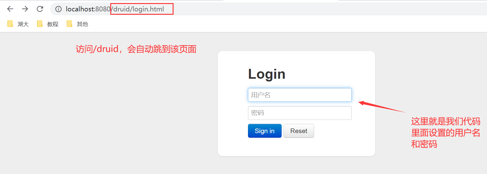
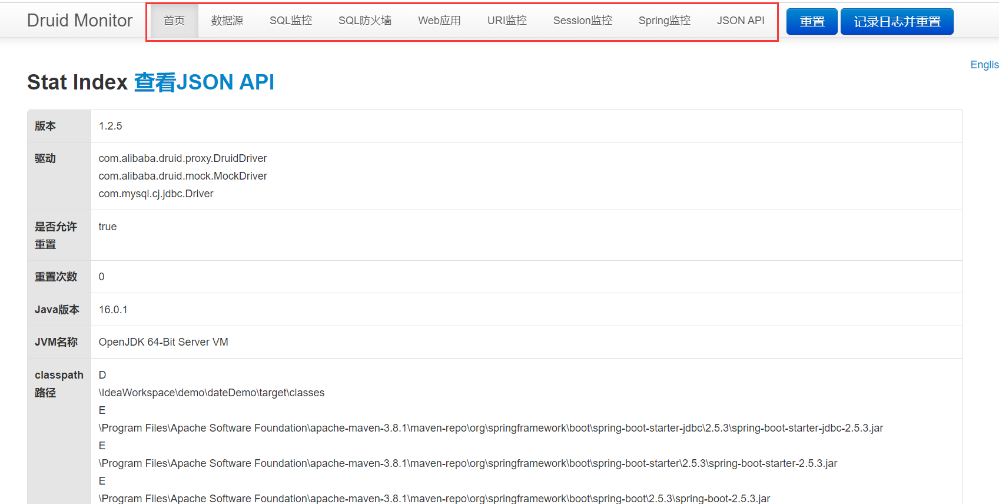
登陆进入后台，就可以看到相关信息
如果执行了一个sql操作，就可以在SQL监控中，看到该语句的执行情况
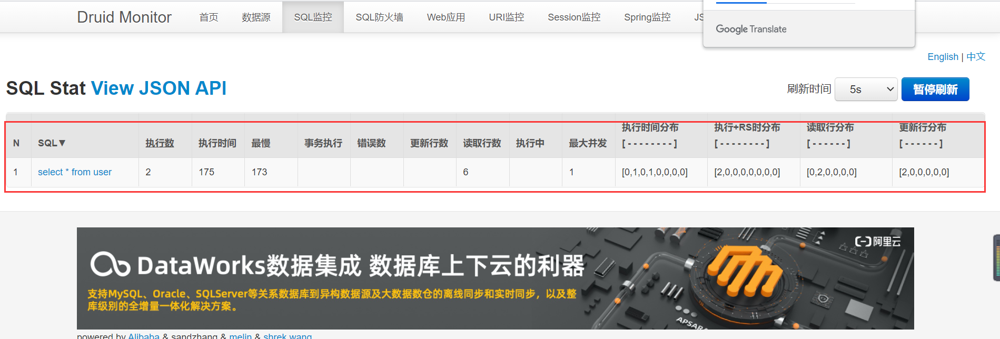
点进去还可以查看详情
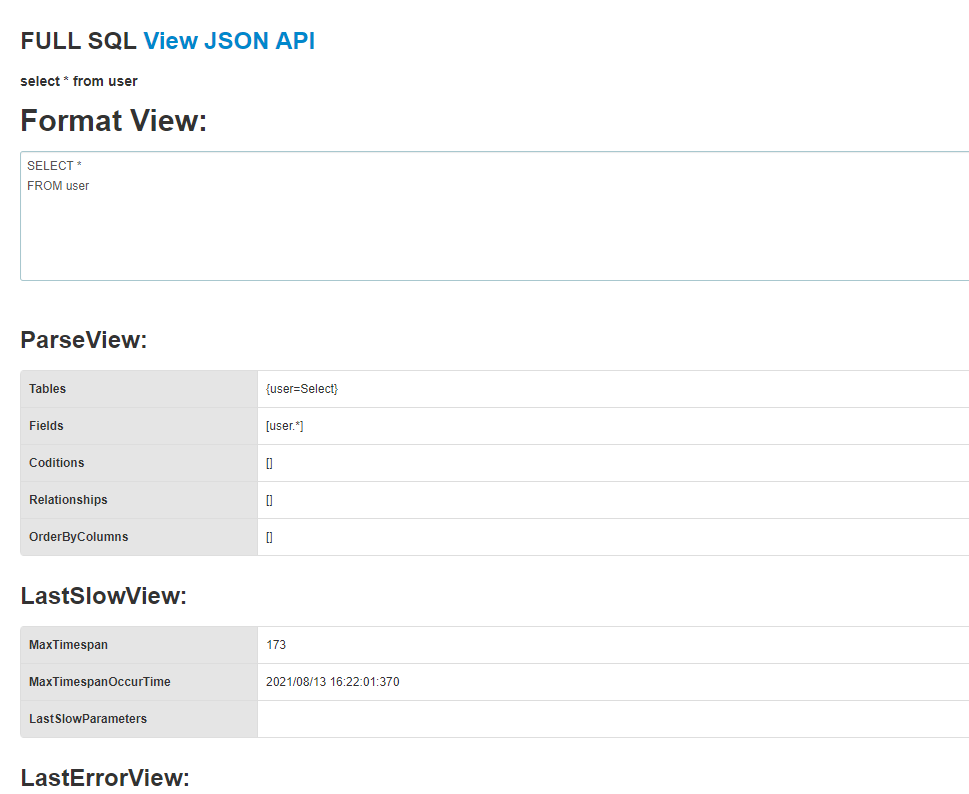
整合MyBatis框架
1、依赖
xxxxxxxxxx61<!-- https://mvnrepository.com/artifact/org.mybatis.spring.boot/mybatis-spring-boot-starter -->2<dependency>3 <groupId>org.mybatis.spring.boot</groupId>4 <artifactId>mybatis-spring-boot-starter</artifactId>5 <version>2.2.0</version>6</dependency>2、Mapper接口
直接一个Mapper注解就相当于将mapper注册了
xxxxxxxxxx151package com.example.mybatisdemo.mapper;2
3import com.example.mybatisdemo.pojo.User;4import org.apache.ibatis.annotations.Mapper;5import org.springframework.stereotype.Repository;6
7import java.util.List;8
9//这个注解表示了这是Mybaits的一个mapper类10public interface UserMapper {13
14 List<User> queryUserList();15}3、配置文件
包括向spring boot里面整合mybatis
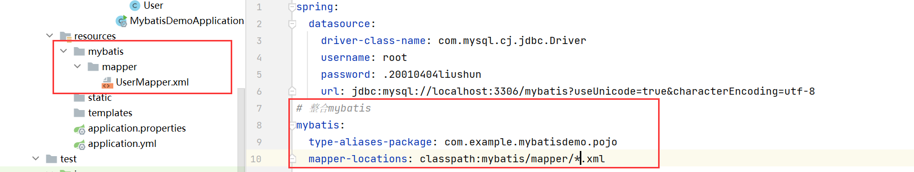
4、mapper.xml实现
xxxxxxxxxx91 2 4<mapper namespace="com.example.mybatisdemo.mapper.UserMapper">5
6 <select id="queryUserList" resultType="User">7 select * from user8 </select>9</mapper>5、Controller直接测试
本来需要controller调用service层，然后service层调用mapper（dao）层
xxxxxxxxxx251package com.example.mybatisdemo.controller;2
3import com.example.mybatisdemo.mapper.UserMapper;4import com.example.mybatisdemo.pojo.User;5import org.springframework.beans.factory.annotation.Autowired;6import org.springframework.web.bind.annotation.RequestMapping;7import org.springframework.web.bind.annotation.RestController;8
9import java.util.List;10
11public class UserController {13
14 15 private UserMapper userMapper;16
17 ("/query")18 public List<User> queryUserList(){19 List<User> users = userMapper.queryUserList();20 for (User user : users) {21 System.out.println(user);22 }23 return users;24 }25}6、结果
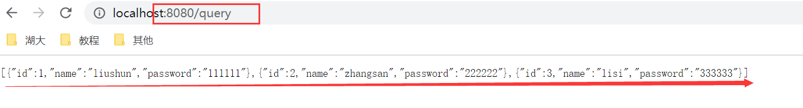
SpringSecurity
简介
Spring Security 是针对Spring项目的安全框架，也是Spring Boot底层安全模块默认的技术选型，他可以实现强大的Web安全控制，对于安全控制，我们仅需要引入spring-boot-starter-security模块，进行少量的配置，即可实现强大的安全管理!
记住几个类:
- webSecurityConfigurerAdapter:自定义Security策略
- AuthenticationManagerBuilder:自定义认证策略
- @EnableWebSecurity:开启WebSecurity模式
spring Security的两个主要目标是“认证"和“授权”(访问控制)。
“认证”(Authentication)
“授权”(Authorization)
这个概念是通用的，而不是只在Spring Security中存在。
官网：https://spring.io/projects/spring-security
导入依赖
xxxxxxxxxx41<dependency>2 <groupId>org.springframework.boot</groupId>3 <artifactId>spring-boot-starter-security</artifactId>4</dependency>接下来就只需要在配置文件目录建立配置类即可
用户认证和授权
配置类
重写了授权方法后，访问特定页面需要登陆对应的用户才能访问，对应的用户信息在认证方法中填写（一般是从数据库中获取）
xxxxxxxxxx421package com.example.mybatisdemo.config;2
3import org.springframework.security.config.annotation.authentication.builders.AuthenticationManagerBuilder;4import org.springframework.security.config.annotation.web.builders.HttpSecurity;5import org.springframework.security.config.annotation.web.configuration.EnableWebSecurity;6import org.springframework.security.config.annotation.web.configuration.WebSecurityConfigurerAdapter;7import org.springframework.security.crypto.bcrypt.BCryptPasswordEncoder;8
9//AOP 拦截器 横切10public class SecurityConfig extends WebSecurityConfigurerAdapter {12
13 //链式编程14 //授权15 16 protected void configure(HttpSecurity http) throws Exception {17 //首页所有人可以访问，功能页只有对应权限的人才能访问18 //请求授权的规则19 http.authorizeRequests()20 .antMatchers("/").permitAll()21 .antMatchers("/level1/**").hasRole("vip1")22 .antMatchers("/level2/**").hasRole("vip2")23 .antMatchers("/level3/**").hasRole("vip3");24
25 //没有权限自动到登录页26 http.formLogin();27 }28
29 //认证30 31 protected void configure(AuthenticationManagerBuilder auth) throws Exception {32 //这些数据正常应该从数据库中去读33 //通过and链接多个用户, passwordEncoder是设置密码加密编码，不加会报错34 auth.inMemoryAuthentication().passwordEncoder(new BCryptPasswordEncoder())35 .withUser("liushun").password(new BCryptPasswordEncoder().encode("123456")).roles("vip1","vip2")36 .and()37 .withUser("root").password(new BCryptPasswordEncoder().encode("123456")).roles("vip1","vip2","vip3")38 .and()39 .withUser("guest").password(new BCryptPasswordEncoder().encode("123456")).roles("vip3");40 }41}42
数据库中获取认证信息
需要先注入数据源，然后在认证时，获取数据源
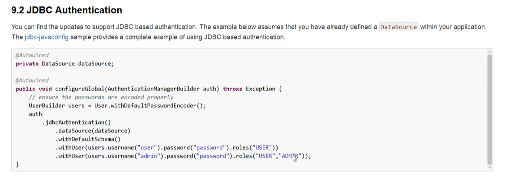
结果及解释
formLogin的方法源码注释中写名了，如果没有登陆就会自动跳转到/login请求，如果认证失败了，会重定向到error请求
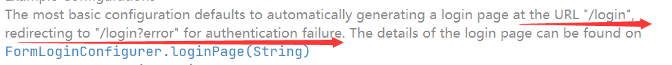
登陆页面如下，这个登陆页面是他自己内定配置的，不是我们写的登陆页面
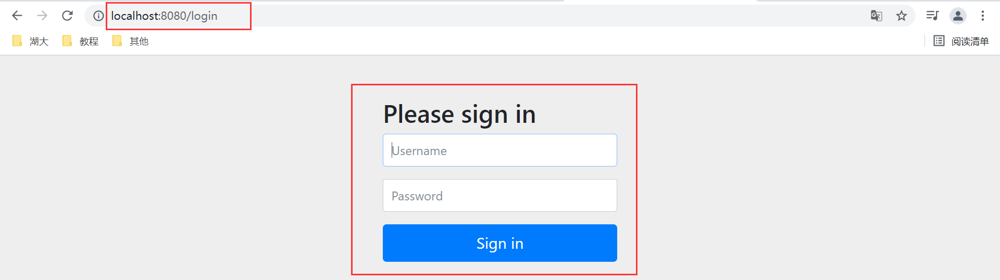
如果账号或者密码错误，会跳转到?error请求，页面如下
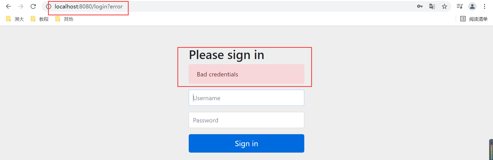
登陆成功了，就能访问配置类代码中授权的页面
注销
前端
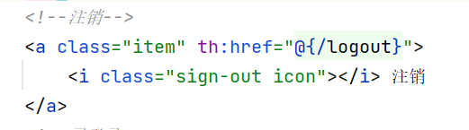
后端
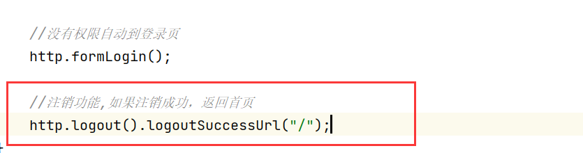
直接在授权的方法中，假如该语句即可
结果
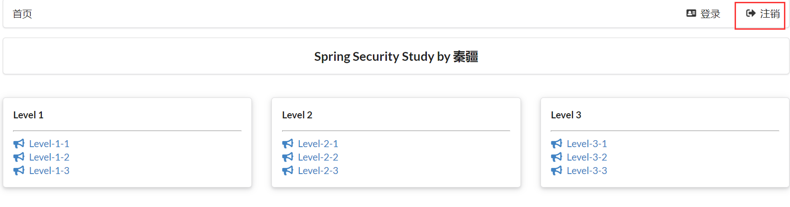
点击注销即可跳至如下页面，需要确认退出
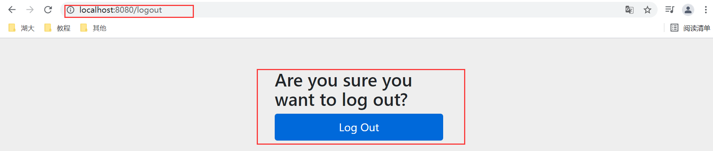
其余配置-有错
xxxxxxxxxx81//没有权限自动到登录页, 后面可以设置跳转至哪个页面2http.formLogin().loginPage("/toLogin").usernameParameter("username").passwordParameter("password").loginProcessingUrl("/login");3
4//注销功能,如果注销成功，返回首页5http.logout().logoutSuccessUrl("/");6
7//开启记住我功能 cookie默认保存两周8http.rememberMe().rememberMeParameter("remember");
Shiro
简介
Apache Shiro是一个强大且易用的Java安全框架,执行身份验证、授权、密码和会话管理。使用Shiro的易于理解的API,您可以快速、轻松地获得任何应用程序,从最小的移动应用程序到最大的网络和企业应用程序。
主要功能
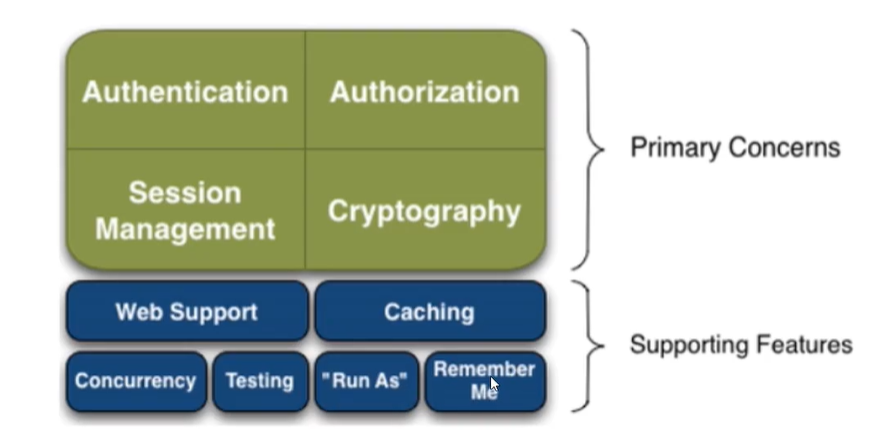
三个核心组件：Subject, SecurityManager 和 Realms.
Subject：即“当前操作用户”。但是，在Shiro中，Subject这一概念并不仅仅指人，也可以是第三方进程、后台帐户（Daemon Account）或其他类似事物。它仅仅意味着“当前跟软件交互的东西”。
Subject代表了当前用户的安全操作，SecurityManager则管理所有用户的安全操作。
SecurityManager：它是Shiro框架的核心，典型的Facade模式，Shiro通过SecurityManager来管理内部组件实例，并通过它来提供安全管理的各种服务。
Realm： Realm充当了Shiro与应用安全数据间的“桥梁”或者“连接器”。也就是说，当对用户执行认证（登录）和授权（访问控制）验证时，Shiro会从应用配置的Realm中查找用户及其权限信息。
从这个意义上讲，Realm实质上是一个安全相关的DAO：它封装了数据源的连接细节，并在需要时将相关数据提供给Shiro。当配置Shiro时，你必须至少指定一个Realm，用于认证和（或）授权。配置多个Realm是可以的，但是至少需要一个。
Shiro内置了可以连接大量安全数据源（又名目录）的Realm，如LDAP、关系数据库（JDBC）、类似INI的文本配置资源以及属性文件等。如果系统默认的Realm不能满足需求，你还可以插入代表自定义数据源的自己的Realm实现。
环境整合
1、首先需要自定义realm类
xxxxxxxxxx261package com.example.shirodemo.config;2
3import org.apache.shiro.authc.AuthenticationException;4import org.apache.shiro.authc.AuthenticationInfo;5import org.apache.shiro.authc.AuthenticationToken;6import org.apache.shiro.authz.AuthorizationInfo;7import org.apache.shiro.realm.AuthorizingRealm;8import org.apache.shiro.subject.PrincipalCollection;9
10public class UserRealm extends AuthorizingRealm {11
12 //授权13 14 protected AuthorizationInfo doGetAuthorizationInfo(PrincipalCollection principalCollection) {15 System.out.println("授权");16 return null;17 }18
19 //认证20 21 protected AuthenticationInfo doGetAuthenticationInfo(AuthenticationToken authenticationToken) throws AuthenticationException {22 System.out.println("认证");23 return null;24 }25}26
2、然后是配置类
xxxxxxxxxx381package com.example.shirodemo.config;2
3import org.apache.shiro.spring.web.ShiroFilterFactoryBean;4import org.apache.shiro.web.mgt.DefaultWebSecurityManager;5import org.springframework.beans.factory.annotation.Qualifier;6import org.springframework.context.annotation.Bean;7import org.springframework.context.annotation.Configuration;8
9public class ShiroConfig {11
12 //ShiroFilterFactory13 14 public ShiroFilterFactoryBean shiroFilterFactoryBean(DefaultWebSecurityManager defaultWebSecurityManager){15 ShiroFilterFactoryBean bean = new ShiroFilterFactoryBean();16 //设置安全管理器17 bean.setSecurityManager(defaultWebSecurityManager);18 return bean;19 }20
21 //DefaultWebSecurityManager : 222 //根据方法名自动注入23 24 public DefaultWebSecurityManager defaultWebSecurityManager(("userRealm") UserRealm userRealm){25 DefaultWebSecurityManager defaultWebSecurityManager = new DefaultWebSecurityManager();26 //关联realm27 defaultWebSecurityManager.setRealm(userRealm);28 return defaultWebSecurityManager;29 }30
31
32 //realm 需要自定义类: 133 34 public UserRealm userRealm(){35 return new UserRealm();36 }37}38
登录拦截
只需要在shiroFilterFactoryBean方法中，设置相关属性即可
xxxxxxxxxx141/* 添加Shiro的内置过滤器2 anon:无需认证就可以访问3 authc:必颈认证了才能让问4 user:必须拥有记住我功能才能用5 perms :拥有对某个资源的权限才能访问;6 roles :拥有某个角色权限才能访问7 */8Map<String, String> linkedHashMap = new LinkedHashMap<>();9//linkedHashMap.put("/user/add", "anon");10linkedHashMap.put("/user/*", "authc");11bean.setFilterChainDefinitionMap(linkedHashMap);12
13设置登陆的请求14bean.setLoginUrl("/toLogin");下面是一些权限等级
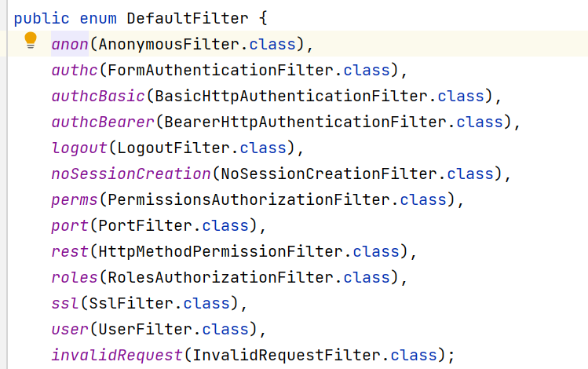
只要点击页面就回跳至登陆页面
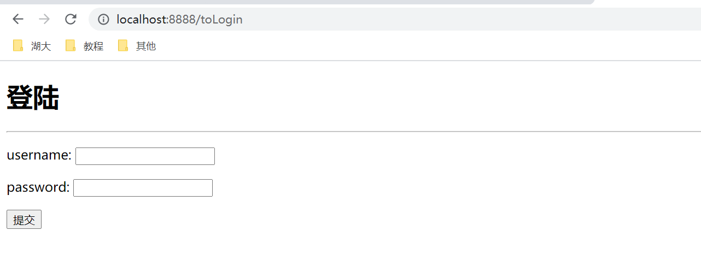
用户验证controller登陆方法
xxxxxxxxxx171("/login")2public String login(String username, String password, Model model){3 //获取当前用户4 Subject subject = SecurityUtils.getSubject();5 //封装用户的登陆数据6 UsernamePasswordToken token = new UsernamePasswordToken(username, password);7 //执行登陆方法，如果没有异常就ok8 try{9 subject.login(token); //c10 return "index";11 }catch (UnknownAccountException e){ //用户名12 model.addAttribute("msg", "username error");13 return "login";14 }catch (IncorrectCredentialsException e){ //密码15 model.addAttribute("msg", "password error");16 return "login";17 }关于认证的一些函数以及用法
xxxxxxxxxx81subject currentuser = securityutils.getsubject;2session session = currentuser.getsession();3currentuser.isAuthenticated();4currentuser.getPrincipal();5currentUser.hasRole( "schwartz");6currentuser.isPermitted ("lightsaberlwield");7currentuser.logout();8
UserRealm中认证方法
xxxxxxxxxx181//认证2protected AuthenticationInfo doGetAuthenticationInfo(AuthenticationToken authenticationToken) throws AuthenticationException {4 System.out.println("认证");5
6 //从数据库中获取7 String username = "root";8 String password = "123456";9
10 UsernamePasswordToken usernamePasswordToken = (UsernamePasswordToken) authenticationToken;11
12 if(!usernamePasswordToken.getUsername().equals(username)){13 return null;//抛出异常14 }15 //密码验证，shiro做,这是为了安全，防止泄露16
17 return new SimpleAuthenticationInfo("", password, "");18}结果
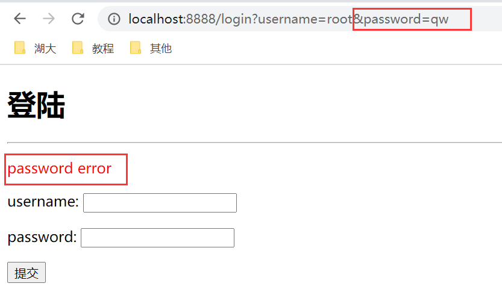
输入错误密码，会提示密码错误，同样用户名也如此，只有登陆成功了，就能够访问add和update页面
整合mybatis-数据库
依赖
xxxxxxxxxx191<dependency>2 <groupId>mysql</groupId>3 <artifactId>mysql-connector-java</artifactId>4</dependency>5<dependency>6 <groupId>log4j</groupId>7 <artifactId>log4j</artifactId>8 <version>1.2.17</version>9</dependency>10<dependency>11 <groupId>com.alibaba</groupId>12 <artifactId>druid</artifactId>13 <version>1.2.6</version>14</dependency>15<dependency>16 <groupId>org.mybatis.spring.boot</groupId>17 <artifactId>mybatis-spring-boot-starter</artifactId>18 <version>2.2.0</version>19</dependency>建立mapper,service,pojo层
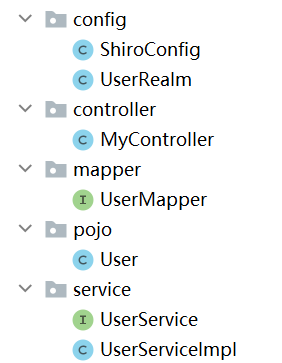
resources里面需要添加xml配置文件
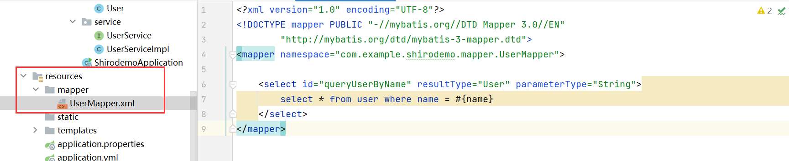
yml文件配置数据源，以及mybatis
xxxxxxxxxx351server2 port88883
4spring5 datasource6 usernameroot7 password.20010404liushun8 driver-class-namecom.mysql.cj.jdbc.Driver9 urljdbcmysql//localhost3306/mybatis?useUnicode=true&characterEncoding=utf-810 typecom.alibaba.druid.pool.DruidDataSource11 #Spring Boot 黑认是不注入这些属性值的，需要自己绑定12 #druid数据源专有配置13 initialSize514 minIdle515 max-active2016 max-wait6000017 time-between-eviction-runs-millis6000018 min-evictable-idle-time-millis30000019 validation-querySELECT 1 FROM DUAL20 test-while-idletrue21 test-on-borrowfalse22 test-on-returnfalse23 pool-prepared-statementstrue24
25 #配置监控统计拦截的filters, stat:监控统计 Log4j:日志记录 wall:防御lsqL注入26 #如果允许时报错java.lang.cLassNotFoundException: org.apache.log4j.Priority27 #则导入log4j依赖即可，Maven地址: https : //mvnrepository.com/artifact/log4j/log4j28 filtersstat, wall, log4j29 maxpoolPreparedStatementPerConnectionSize2030 useGlobalDataSourceStattrue31 connection-propertiesdruid.stat.mergeSql=true;druid.stat.slowSqlMillis=50032
33mybatis34 type-aliases-packagecom.example.shirodemo.pojo35 mapper-locationsclasspathmapper/*.xmlrealm类方法实现数据库
xxxxxxxxxx201public class UserRealm extends AuthorizingRealm {2
3 //为了从数据库中获得数据4 5 UserServiceImpl userService;6
7 //认证8 9 protected AuthenticationInfo doGetAuthenticationInfo(AuthenticationToken authenticationToken) throws AuthenticationException {10 System.out.println("认证");11 UsernamePasswordToken usernamePasswordToken = (UsernamePasswordToken) authenticationToken;12 //从数据库中获得数据13 User user = userService.queryUserByName(((UsernamePasswordToken) authenticationToken).getUsername());14 if (user == null){15 return null;16 }17 //密码验证，shiro做 加密了18 return new SimpleAuthenticationInfo("", user.getPassword(), "");19 }20}
请求授权
1、shiroFilterFactoryBean方法
xxxxxxxxxx181LinkedHashMap<String, String> linkedHashMap = new LinkedHashMap<>();2// ----授权一定要卸载拦截前面---3//授权4//如果没有被授权，就会跳转到未授权页面5linkedHashMap.put("/user/add", "perms[user:add]");6linkedHashMap.put("/user/update", "perms[user:update]");7
8//拦截9//这里拦截的是url请求，所以需要和requestMapping的路径一致10//linkedHashMap.put("/user/add", "anon");11linkedHashMap.put("/user/*", "authc");12
13bean.setFilterChainDefinitionMap(linkedHashMap);14
15//设置登陆的请求16bean.setLoginUrl("/toLogin");17//设置未授权页面18bean.setUnauthorizedUrl("/unauth");2、doGetAuthorizationInfo方法
授权操作
xxxxxxxxxx161//授权2protected AuthorizationInfo doGetAuthorizationInfo(PrincipalCollection principalCollection) {4 System.out.println("授权");5
6 //给用户授予权限，拿到授权对象7 SimpleAuthorizationInfo info = new SimpleAuthorizationInfo();8 //拿到当前对象9 Subject subject = SecurityUtils.getSubject();10 //拿到user对象,通过认证方法的返回值11 User currentUser = (User) subject.getPrincipal();12 //设置当前用户的权限13 info.addStringPermission(currentUser.getPerms());14
15 return info;16}user对象由认证方法获得
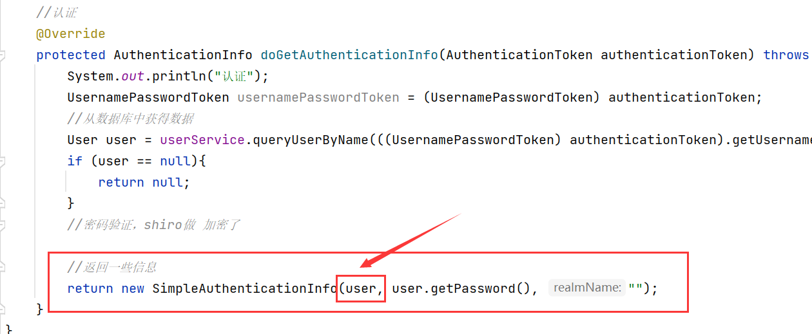
3、Controller需要处理没有权限请求
xxxxxxxxxx51("/unauth")2public String unauthorized(){4 return "未经授权无法访问该页面";5}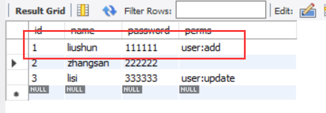
这样，登陆liushun用户后，他只能访问add页面，不能访问update页面
整合thymeleaf
maven依赖
xxxxxxxxxx61<!--整合shiro和thymeleaf-->2<dependency>3 <groupId>com.github.theborakompanioni</groupId>4 <artifactId>thymeleaf-extras-shiro</artifactId>5 <version>2.0.0</version>6</dependency>前端页面控制
主要实现的功能就是，有哪些权限就显示哪些页面，以及登陆成功后就不显示登陆按钮了
xxxxxxxxxx131<h1>首页</h1>2<div th:if="${session.loginUser==null}">3 <a th:href="@{/toLogin}">登陆</a>4</div>5
6<p th:text="${msg}"></p>7<hr>8<div shiro:hasPermission="user:add">9 <a th:href="@{/user/add}">add</a>10</div>11<div shiro:hasPermission="user:update">12 <a th:href="@{/user/update}">update</a>13</div>设置session信息--UserRealm的认证方法中
这个session不是网站的session，这是Java中的一个接口
xxxxxxxxxx41//还可以设置session，并且在前端获取2Subject subject = SecurityUtils.getSubject();3Session session = subject.getSession();4session.setAttribute("loginUser", user);存在问题
在项目中使用shiro作为权限控制，配置成功后，访问一切正常。但发现在向登录页面重定向时，URL中总是带;JSESSIONID=***，这时Session的另一种使用方式（一种是Cookie）。
导致出现400错误
解决方案
实现一个DefaultWebSessionManager类，将他的自动追加功能设置为false
xxxxxxxxxx191//解决整合thymeleaf url自动追加sessionid的问题2public DefaultWebSessionManager defaultWebSessionManager(){4 DefaultWebSessionManager defaultWebSessionManager = new DefaultWebSessionManager();5 //不让重写url6 defaultWebSessionManager.setSessionIdUrlRewritingEnabled(false);7 return defaultWebSessionManager;8}9
10//DefaultWebSecurityManager : 211//根据方法名自动注入12public DefaultWebSecurityManager defaultWebSecurityManager(("userRealm") UserRealm userRealm, DefaultWebSessionManager defaultWebSessionManager){14 DefaultWebSecurityManager defaultWebSecurityManager = new DefaultWebSecurityManager();15 //关联realm16 defaultWebSecurityManager.setSessionManager(defaultWebSessionManager);17 defaultWebSecurityManager.setRealm(userRealm);18 return defaultWebSecurityManager;19}这样，验证后，并能正确访问了
结果展示
初始，没有用户时，只有一个登录按钮
登录用户后，就没有了登录按钮，有了它对应权限相应的页面选项
点击add按钮，也可以看到请求url没有追加sessionId了，可以正常访问
Swagger
学习目标
- 了解Swagger的作用和概念
- 了解前后端分离
- 在SpringBoot中集成Swagger
前后端分离
前后端分离式时代:
后端︰后端控制层，服务层，数据访问层【后端团队】
前端︰前端控制层，视图层【前端团队】
- 伪造后端数据，json。已经存在了，不需要后端，前端工程依旧能够跑起来
前端后如何交互?===>APl
前后端相对独立，松耦合;
前后端甚至可以部署在不同的服务器上;
简介
- 号称世界上最流行的Api框架;
- RestFul Api文档在线自动生成工具=>Api文档与API定义同步更新
- 直接运行，可以在线测试API接口;
- 支持多种语言:(Java，Php....)
springBoot集成
maven依赖
xxxxxxxxxx131<!--使用2.9.2版本最好 -->2<!-- https://mvnrepository.com/artifact/io.springfox/springfox-swagger2 -->3<dependency>4 <groupId>io.springfox</groupId>5 <artifactId>springfox-swagger2</artifactId>6 <version>2.9.2</version>7</dependency>8<!-- https://mvnrepository.com/artifact/io.springfox/springfox-swagger-ui -->9<dependency>10 <groupId>io.springfox</groupId>11 <artifactId>springfox-swagger-ui</artifactId>12 <version>2.9.2</version>13</dependency>需要自己写配置类
xxxxxxxxxx661package com.example.swaggerdemo.config;2
3import org.springframework.beans.factory.config.YamlProcessor;4import org.springframework.context.annotation.Bean;5import org.springframework.context.annotation.Configuration;6import org.springframework.web.servlet.config.annotation.ResourceHandlerRegistry;7import org.springframework.web.servlet.config.annotation.WebMvcConfigurationSupport;8import springfox.documentation.service.ApiInfo;9import springfox.documentation.service.Contact;10import springfox.documentation.spi.DocumentationType;11import springfox.documentation.spring.web.plugins.Docket;12import springfox.documentation.swagger2.annotations.EnableSwagger2;13
14import java.util.ArrayList;15
16public class SwaggerConfig extends WebMvcConfigurationSupport {19
20 21 public Docket docket(){22 return new Docket(DocumentationType.SWAGGER_2)23 .apiInfo(apiInfo());24 }25
26 //配置swagger信息27 public ApiInfo apiInfo(){28 //可以用builder来设置信息，更加清晰29 // private ApiInfo apiInfo(){30 // return new ApiInfoBuilder()31 // .title("Swagger2")32 // .description("RESTful API接口")33 // .version("1.0.1")34 // .build();35 // }36 Contact contact = new Contact("liushun", "aaa", "1743760060@qq.com");37 return new ApiInfo(38 "刘顺的swaggerAPI文档",39 "努力就好",40 "v1.0",41 "111",42 contact,43 "Apache 2.0",44 "http://www.apache.org/licenses/LICENSE-2.0",45 new ArrayList<>()46 );47 }48 /**49 * 解决swagger-ui.html 404无法访问的问题 要用2.9.2版本的maven jar包50 */51 52 protected void addResourceHandlers(ResourceHandlerRegistry registry) {53 // 解决静态资源无法访问54 registry.addResourceHandler("/**")55 .addResourceLocations("classpath:/static/");56 // 解决swagger无法访问57 registry.addResourceHandler("/swagger-ui.html")58 .addResourceLocations("classpath:/META-INF/resources/");59 // 解决swagger的js文件无法访问60 registry.addResourceHandler("/webjars/**")61 .addResourceLocations("classpath:/META-INF/resources/webjars/");62 super.addResourceHandlers(registry);63 }64
65}66
初结果
访问swagger-ui.html请求，就可以进入该页面
配置扫描接口及开关
xxxxxxxxxx231public Docket docket(Environment environment){3
4 //获得项目的运行环境5 Profiles profiles = Profiles.of("dev", "test");6 //通过environment.acceptsProfiles判断是否处在设定的环境中7 boolean flag = environment.acceptsProfiles(profiles);8
9 return new Docket(DocumentationType.SWAGGER_2)10 .apiInfo(apiInfo())11 //是否启用swagger,false则不能在浏览器中访问，默认为true12 .enable(flag)13 //select和build是配套的，中间不能加别的了，只能是apis和paths14 .select()15 //RequestHandlerSelectors 配置要扫描接口的方式16 //basePackage 指定要扫描的包17 //any 扫描所有18 //none 不扫描19 .apis(RequestHandlerSelectors.basePackage("com.example.swaggerdemo.controller"))20 //过滤路径 只扫描/user路径下的请求21 //.paths(PathSelectors.ant("/user/**"))22 .build();23}配置多套环境，并且可以选择激活哪套环境

如果选择默认环境，端口为8080，那么，他就不能访问swagger
如果选择dev环境，他就可以授权访问
配置API文档的分组
原来默认是default
多用户
xxxxxxxxxx411//可以配置多个Docket，代表了多个用户2public Docket docketA(){4 return new Docket(DocumentationType.SWAGGER_2).groupName("A");5}6
7public Docket docketB(){9 return new Docket(DocumentationType.SWAGGER_2).groupName("B");10}11
12public Docket docketC(){14 return new Docket(DocumentationType.SWAGGER_2).groupName("C");15}16
17public Docket docket(Environment environment){19
20 //获得项目的运行环境21 Profiles profiles = Profiles.of("dev", "test");22 //通过environment.acceptsProfiles判断是否处在设定的环境中23 boolean flag = environment.acceptsProfiles(profiles);24
25 return new Docket(DocumentationType.SWAGGER_2)26 .apiInfo(apiInfo())27 //是否启用swagger,false则不能在浏览器中访问，默认为true28 .enable(flag)29 //分组30 .groupName("刘顺")31 //select和build是配套的，中间不能加别的了，只能是apis和paths32 .select()33 //RequestHandlerSelectors 配置要扫描接口的方式34 //basePackage 指定要扫描的包35 //any 扫描所有36 //none 不扫描37 .apis(RequestHandlerSelectors.basePackage("com.example.swaggerdemo.controller"))38 //过滤路径 只扫描/user路径下的请求39 //.paths(PathSelectors.ant("/user/**"))40 .build();41}结果如下
注释
实体类
xxxxxxxxxx121package com.example.swaggerdemo.pojo;2
3import io.swagger.annotations.ApiModel;4import io.swagger.annotations.ApiModelProperty;5
6//@Api(注释)7("用户实体类")8public class User {9 ("用户名")10 public String username;11 ("密码")12 public String password;controller
xxxxxxxxxx221(tags = "hello控制类")2public class HelloController {4
5 6 ("/hello")7 public String hello(){8 return "hello";9 }10
11 //只要我们的接口中，返回的是一个实体类，就会被扫描到swagger中12 13 ("/user")14 public User user(){15 return new User("liushun", "123456");16 }17
18 ("hello控制类")19 ("/hello2")20 public String hello2(("用户名") String username){21 return "hello" + username;22 }测试
点击try it out，可以进行测试
下面就会要你填写参数，点击execute就可以执行请求，就可以看到执行结果及相关信息
总结
- 我们可以通过Swagger给一些比较难理解的属性或者接口，增加注释信息
- 接口文档实时更新
- 可以在线测试
Swagger是一个优秀的工具，几乎所有大公司都有使用它
【注意点】在正式发布的时候，关闭Swagger! ! !出于安全考虑。而且节省运行的内存;
任务
异步任务
有时候一些消耗时间的工作可以开启一个异步任务去处理，提高用户的体验感
只需要在启动类和需要异步执行的方法上加上注解即可实现
启动类
xxxxxxxxxx101//开启异步功能2public class TaskDemoApplication {5
6 public static void main(String[] args) {7 SpringApplication.run(TaskDemoApplication.class, args);8 }9
10}异步方法
xxxxxxxxxx201package com.example.taskdemo.service;2
3import org.springframework.scheduling.annotation.Async;4import org.springframework.stereotype.Service;5
6
7public class AsyncService {9
10 //异步方法11 12 public void hello(){13 try{14 Thread.sleep(3000);15 }catch (InterruptedException e){16 e.printStackTrace();17 }18 System.out.println("handling.....");19 }20}Controller
xxxxxxxxxx131public class HelloController {3
4 5 AsyncService asyncService;6
7 8 ("/hello")9 public String hello(){10 asyncService.hello();11 return "hello";12 }13}
邮件任务
导入jar包
xxxxxxxxxx41<dependency>2 <groupId>org.springframework.boot</groupId>3 <artifactId>spring-boot-starter-mail</artifactId>4</dependency>配置文件
xxxxxxxxxx61spring.mail.host=smtp.qq.com2spring.mail.username=1743760069@qq.com3#授权码4spring.mail.password=ansrfoqtefwhbgbb5#开启加密验证6spring.mail.properties.mail.smtp.ssl.enable=true发送邮件
xxxxxxxxxx331class TaskDemoApplicationTests {3
4 5 JavaMailSenderImpl javaMailSender;6
7 8 void contextLoads() {9 //一个简单的邮件10 SimpleMailMessage simpleMailMessage = new SimpleMailMessage();11 simpleMailMessage.setSubject("subject");12 simpleMailMessage.setText("text");13 simpleMailMessage.setFrom("1743760069@qq.com");14 simpleMailMessage.setTo("1743760069@qq.com");15 javaMailSender.send(simpleMailMessage);16 }17
18 19 void contextLoads2() throws MessagingException {20 //一个复杂的邮件，可以将这个封装为一个方法，就可以作为一个工具类了21 MimeMessage mimeMessage = javaMailSender.createMimeMessage();22 //组装23 MimeMessageHelper helper = new MimeMessageHelper(mimeMessage, true);24 helper.setSubject("subject");25 helper.setText("<h1 style='color:red'>text</h1>", true);26 //附件,第一个参数是自己命名的文件名27 helper.addAttachment("1.png", new File("C:\\Users\\17437\\Desktop\\1.png"));28 helper.setFrom("1743760069@qq.com");29 helper.setTo("1743760069@qq.com");30
31 javaMailSender.send(mimeMessage);32 }33}结果
定时任务
实现
和异步任务类似，运行类需要添加注解
然后service方法也要加注解，这样可以看到刚好在16：40的时候打印了一个hello
xxxxxxxxxx101public class ScheduledService {3
4 //设置时间 cron表达式5 //秒 分 时 日 月 周几6 (cron = "0 40 16 * * 0-7")7 public void hello(){8 System.out.println("hello");9 }10}cron表达式
简介
Cron表达式是一个字符串，字符串以5或6个空格隔开，分为6或7个域，每一个域代表一个含义
Seconds Minutes Hours DayofMonth Month DayofWeek Year或 Seconds Minutes Hours DayofMonth Month DayofWeek
其中每个元素可以是一个值(如6),一个连续区间(9-12),一个间隔时间(8-18/4)(/表示每隔4小时),一个列表(1,3,5),通配符。由于"月份中的日期"和"星期中的日期"这两个元素互斥的,必须要对其中一个设置?
字符
每一个域可出现的字符如下：
- Seconds:可出现", - * /"四个字符，有效范围为0-59的整数
- Minutes:可出现", - * /"四个字符，有效范围为0-59的整数
- Hours:可出现", - * /"四个字符，有效范围为0-23的整数
- DayofMonth:可出现", - * / ? L W C"八个字符，有效范围为0-31的整数
- Month:可出现", - * /"四个字符，有效范围为1-12的整数或JAN-DEc
- DayofWeek:可出现", - * / ? L C #"四个字符，有效范围为1-7的整数或SUN-SAT两个范围。1表示星期天，2表示星期一， 依次类推
- Year:可出现", - * /"四个字符，有效范围为1970-2099年
特殊字符
每一个域都使用数字，但还可以出现如下特殊字符，它们的含义是：
- (1)：表示匹配该域的任意值，假如在Minutes域使用, 即表示每分钟都会触发事件。
- (2)?:只能用在DayofMonth和DayofWeek两个域。它也匹配域的任意值，但实际不会。因为DayofMonth和 DayofWeek会相互影响。例如想在每月的20日触发调度，不管20日到底是星期几，则只能使用如下写法： 13 13 15 20 * ?, 其中最后一位只能用？，而不能使用，如果使用表示不管星期几都会触发，实际上并不是这样。
- (3)-:表示范围，例如在Minutes域使用5-20，表示从5分到20分钟每分钟触发一次
- (4)/：表示起始时间开始触发，然后每隔固定时间触发一次，例如在Minutes域使用5/20,则意味着5分钟触发一次，而25，45等分别触发一次.
- (5),:表示列出枚举值值。例如：在Minutes域使用5,20，则意味着在5和20分每分钟触发一次。
- (6)L:表示最后，只能出现在DayofWeek和DayofMonth域，如果在DayofWeek域使用5L,意味着在最后的一个星期四触发。
- (7)W: 表示有效工作日(周一到周五),只能出现在DayofMonth域，系统将在离指定日期的最近的有效工作日触发事件。例如：在 DayofMonth使用5W，如果5日是星期六，则将在最近的工作日：星期五，即4日触发。如果5日是星期天，则在6日(周一)触发；如果5日在星期一 到星期五中的一天，则就在5日触发。另外一点，W的最近寻找不会跨过月份
- (8)LW:这两个字符可以连用，表示在某个月最后一个工作日，即最后一个星期五。
- (9)#:用于确定每个月第几个星期几，只能出现在DayofMonth域。例如在4#2，表示某月的第二个星期三。
- 举几个例子: 0 0 2 1 * ? * 表示在每月的1日的凌晨2点调度任务 0 15 10 ? * MON-FRI 表示周一到周五每天上午10：15执行作业 0 15 10 ? 6L 2002-2006 表示2002-2006年的每个月的最后一个星期五上午10:15执行
例子
- 0 0 10,14,16 * * ? 每天上午10点，下午2点，4点
- 0 0/30 9-17 * * ? 朝九晚五工作时间内每半小时
- 0 0 12 ? * WED 表示每个星期三中午12点
- "0 0 12 * * ?" 每天中午12点触发
- "0 15 10 ? * *" 每天上午10:15触发
- "0 15 10 * * ?" 每天上午10:15触发
- "0 15 10 * * ? *" 每天上午10:15触发
- "0 15 10 * * ? 2005" 2005年的每天上午10:15触发
- "0 * 14 * * ?" 在每天下午2点到下午2:59期间的每1分钟触发
- "0 0/5 14 * * ?" 在每天下午2点到下午2:55期间的每5分钟触发
- "0 0/5 14,18 * * ?" 在每天下午2点到2:55期间和下午6点到6:55期间的每5分钟触发
- "0 0-5 14 * * ?" 在每天下午2点到下午2:05期间的每1分钟触发
- "0 10,44 14 ? 3 WED" 每年三月的星期三的下午2:10和2:44触发
- "0 15 10 ? * MON-FRI" 周一至周五的上午10:15触发
- "0 15 10 15 * ?" 每月15日上午10:15触发
- "0 15 10 L * ?" 每月最后一日的上午10:15触发
- "0 15 10 ? * 6L" 每月的最后一个星期五上午10:15触发
- "0 15 10 ? * 6L 2002-2005" 2002年至2005年的每月的最后一个星期五上午10:15触发
- "0 15 10 ? * 6#3" 每月的第三个星期五上午10:15触发
范围和列表
有些子表达式能包含一些范围或列表
例如：子表达式（天（星期））可以为 “MON-FRI”，“MON，WED，FRI”，“MON-WED,SAT”
“*”字符代表所有可能的值
因此，*在子表达式（月）里表示每个月的含义，在子表达式（天（星期））表示星期的每一天
“/”字符用来指定数值的增量 例如：在子表达式（分钟）里的“0/15”表示从第0分钟开始，每15分钟 在子表达式（分钟）里的“3/20”表示从第3分钟开始，每20分钟（它和“3，23，43”）的含义一样
“？”字符仅被用于天（月）和天（星期）两个子表达式，表示不指定值 当2个子表达式其中之一被指定了值以后，为了避免冲突，需要将另一个子表达式的值设为“？”
“L” 字符仅被用于天（月）和天（星期）两个子表达式，它是单词“last”的缩写 但是它在两个子表达式里的含义是不同的。 在天（月）子表达式中，“L”表示一个月的最后一天 在天（星期）自表达式中，“L”表示一个星期的最后一天，也就是SAT
如果在“L”前有具体的内容，它就具有其他的含义了
例如：“6L”表示这个月的倒数第６天，“FRIL”表示这个月的最一个星期五 注意：在使用“L”参数时，不要指定列表或范围，因为这会导致问题
字段 允许值 允许的特殊字符
- 秒 0-59 , - * /
- 分 0-59 , - * /
- 小时 0-23 , - * /
- 日期 1-31 , - * ? / L W C
- 月份 1-12 或者 JAN-DEC , - * /
- 星期 1-7 或者 SUN-SAT , - * ? / L C #
- 年（可选） 留空, 1970-2099 , - * /
范例
- 每隔5秒执行一次：*/5 * * * * ?
- 每隔1分钟执行一次：0 */1 * * * ?
- 每天23点执行一次：0 0 23 * * ?
- 每天凌晨1点执行一次：0 0 1 * * ?
- 每月1号凌晨1点执行一次：0 0 1 1 * ?
- 每月最后一天23点执行一次：0 0 23 L * ?
- 每周星期天凌晨1点实行一次：0 0 1 ? * L
- 在26分、29分、33分执行一次：0 26,29,33 * * * ?
- 每天的0点、13点、18点、21点都执行一次：0 0 0,13,18,21 * * ?
分布式系统理论
什么是分布式系统?
- 在《分布式系统原理与范型》一书中有如下定义:“分布式系统是若干独立计算机的集合，这些计算机对于用户来说就像单个相关系统”;
- 分布式系统是由一组通过网络进行通信、为了完成共同的任务而协调工作的计算机节点组成的系统。分布式系统的出现是为了用廉价的、普通的机器完成单个计算机无法完成的计算、存储任务。其目的是利用更多的机器，处理更多的数据。
- 分布式系统（distributed system）是建立在网络之上的软件系统。
- 首先需要明确的是，只有当单个节点的处理能力无法满足日益增长的计算、存储任务的时候，且硬件的提升（加内存、加磁盘、使用更好的CPU)高昂到得不偿失的时候，应用程序也不能进一步优化的时候，我们才需要考虑分布式系统。因为，分布式系统要解决的问题本身就是和单机系统一样的，而由于分布式系统多节点、通过网络通信的拓扑结构，会引入很多单机系统没有的问题，为了解决这些问题又会引入更多的机制、协议，带来更多的问题。。。
RPC理论
两个核心模块：通讯，序列化（用于数据传输）
https://www.jianshu.com/p/7d6853140e13
分布式Dubbo+Zookeeper+SpringBoot
什么是Dubbo
Apache Dubbo是一款高性能、轻量级的开源Java RPC框架，它提供了三大核心能力:面向接口的远程方法调用，智能容错和负载均衡，以及服务自动注册和发现。
结构
- 服务提供者(Provider):暴露服务的服务提供方，服务提供者在启动时，向注册中心注册自己提供的服务。
- 服务消费者（Consumer):调用远程服务的服务消费方，服务消费者在启动时，向注册中心订阅自己所需的服务，服务消费者，从提供者地址列表中，基于软负载均衡算法，选一台提供者进行调用，如果调用失败，再选另一台调用。
- 注册中心(Registry):注册中心返回服务提供者地址列表给消费者，如果有变更，注册中心将基于长连接推送变更数据给消费者
- 监控中心(Monitor):服务消费者和提供者，在内存中累计调用次数和调用时间，定时每分钟发送一次统计数据到监控中心
zookeeper :注册中心
dubbo-admin:是一个监控管理后台查看我们注册了哪些服务，哪些服务被消费了
Dubbo: jar包
在项目目录下打包dubbo-admin
mvn clean package -D maven.test.skip=true
算了，太难了，这个，也不懂是啥
现状与未来
xxxxxxxxxx791三层架构+ MVC2 架构--->解耦3开发框架4spring5 IOC AOP6 IOC :控制反转7 约泡:8 泡温泉，泡茶....，泡友9 附近的人，打招呼。加微信，聊天，天天聊， --->约泡10 浴场（容器)︰温泉，茶庄，泡友11 直接进温泉，就有人和你一起了!12 13 原来我们都是自己一步步操作，现在交给容器了!我们需要什么就去拿就可以了14 15 AOP:切面(本质，动态代理)16 为了解决什么?不影响业务本来的情况下，实现动态增加功能，大量应用在日志，事务...等等方面17 18 spring是一个轻量级的Java开源框架，容器19 目的︰解决企业开发的复杂性问题20 spring是春天，觉得他是春天，也十分复杂，配置文件!21 22
23 springBoot24 springBoot并不是新东西，就是spring的升级版!25 新一代avaEE的开发标准，开箱即用!->拿过来就可以用!26 它自动帮我们配置了非常多的东西，我们拿来即用!特性:约定大于配置!27 随着公司体系越来越大，用户越来越多!28 29微服务架构--->新架构30 模块化，功能化!31 用户，支付，签到，娱乐，..... ;32 人多余多:一台服务器解决不了;在增加服务器!横向33 假设A服务器占用98%资源，B服务器只占用了10% 。--负载均衡;34
35 将原来的整体项目，分成模块化，用户就是一个单独的项目，签到也是一个单独的项目，项目和项目之前需要通信，如何通信?36 用户非常多，而签到十分少!给用户多一点服务器，给签到少一点服务器!37
38微服务架构问题?39 分布式架构会遇到的四个核心问题?40 1．这么多服务，客户端该如何去访问?41 2．这么多服务，服务之间如何进行通信?42 3．这么多服务，如何治理呢?43 4．服务挂了，怎么办?44
45 46解决方案:47 springc1oud，是一套生态，就是来解决以上分布式架构的4个问题48 想使用springcloud，必须要掌握SpringBoot，因为springc1oud是基于springBoot;49
50 1.spring cloud NetFlix，出来了一套解决方案!一站式解决方案。我们都可以直接去这里拿?51 Api网关，zuu1组件52 Feign --> Httpclient ---> HTTP的通信方式，同步并阻塞53 服务注册与发现，Eureka54 熔断机制，Hystrix55 56 2018年年底，NetF7ix宣布无限期停止维护。生态不再维护，就会脱节。57 58 2. Apache Dubbo zookeeper，第二套解决系统59 API ∶没有!要么找第三方组件，要么自己实现60 Dubbo是一个高性能的基于Java实现的RPC通信框架! 2.6.x61 服务注册与发现，zookeeper:动物园管理者(Hadoop , Hive)62 没有:借助了Hystrix63
64 3. Springc1oud Alibaba一站式解决方案!65 66目前，又提出了一种方案:67 服务网格:下一代微服务标准,Server Mesh68 代表解决方案: istio(你们未来可能需要掌握! )69 70万变不离其宗，一通百通!71 1.API网关,服务路由72 2.HTTP， RPC框架，异步调用73 3.服务注册与发现，高可用74 4.熔断机制，服务降级75 76如果，你们基于这四个问题，开发一套解决方案，也叫springcloud!77 78为什么要解决这个问题?‘本质:网络是不可靠的!79